freiesMagazin Juni 2012
(ISSN 1867-7991)
Topthemen dieser Ausgabe
Ubuntu und Kubuntu 12.04 LTSAls äußerst geschliffenes Produkt präsentiert sich das neue Ubuntu 12.04 LTS „Precise Pangolin“, wie es sich für eine Distribution mit mehrjähriger Stabilitätsgarantie gehört. Der Artikel soll einen Überblick über die Neuerungen der beiden Version mit Unity und KDE als Desktopmanager geben. (weiterlesen)
Routino
Kaum ein Gemeinschaftsprojekt hat in kurzer Zeit soviel Zuspruch und Unterstützung erhalten wie OpenStreetMap. Die weltweite Karte hat in vielen Ländern, darunter auch Deutschland, einen Detailreichtum erlangt, der kommerzielle Kartenanbieter schlecht aussehen lässt. Ein anderes, zunehmend interessantes Anwendungsgebiet ist die Navigation auf Basis der OSM-Daten. Im Wiki von OSM werden verschiedene Programme und Web-Seiten vorgestellt. Dieser Artikel greift ein Programm heraus, das etwas unglücklich im Wiki als „web-based router“ bezeichnet wird: Routino. (weiterlesen)
Trine 2
Genau ein Jahr, nachdem das Erfolgsspiel Trine im Humble Frozenbyte Bundle erschienen ist, hat der finnische Spieleentwickler Frozenbyte den zweiten Teil für Linux im April 2012 vorgestellt. Der Artikel wirft einen Blick auf Trine 2 und vergleicht ihn mit seinem Vorgänger. (weiterlesen)
Zum Index
Inhalt
Linux allgemeinUbuntu und Kubuntu 12.04 LTS
Der Mai im Kernelrückblick
Anleitungen
Objektorientierte Programmierung: Teil 4 – Strategie, wechsel Dich!
Cloud-Backup mit Bordmitteln
Software
Routino
Trine 2
Community
Rezension: LPIC-1 – Sicher zur erfolgreichen Linux-Zertifizierung
Magazin
Leserbriefe
Veranstaltungen
Vorschau
Konventionen
Impressum
Zum Index
Editorial
Spielen unter Linux
Vor wenigen Tagen erschien das Humble Indie Bundle V [1] und wirft damit wieder einmal die Frage nach Linux als Spieleplattform auf. Der Hintergrund: Das erste Humble Bundle erschien vor gut zwei Jahren im Mai 2010 und bot fünf Spiele diverser unabhängiger Entwicklerfirmen zum Selbstbestimmungspreis an. Die Besonderheit: Die Spiele standen nicht nur wie gewöhnlich unter Windows zur Verfügung, sondern ebenso unter Mac OS X und – was wesentlich interessanter war – auch unter Linux. Im Laufe der zwei Jahre gab es immer mehr Humble Bundles (hier ein paar Statistiken [2]) in verschiedenen Ausprägungen. Die letzten Monate häuften sich die Veröffentlichungen aber und die Qualität der Spiele sank etwas, sodass sich etwas Unmut breit machte. Als das letzte Humble Botanicula Bundle auch noch ein Spiel lieferte, welches auf Adobe Air aufsetzt, welches unter Linux schon seit längerem nicht mehr von Adobe gepflegt wird, fühlten sich die Linux-Anhänger doch etwas veralbert. Im neuesten Humble Bundle treiben die Macher das Ganze mit dem Spiel Limbo auf die Spitze: Denn effektiv wird Wine mit ausgeliefert, in dem Limbo dann läuft. Da stellt sich die Frage: Was erwarten Spieler unter Linux von den Spieleherstellern? Muss es immer eine native Version sein, die extra für Linux angepasst werden muss? Eine native Version hat sicherlich ihre Vorteile, wie der Artikel zu Trine 2 zeigt, kostet aber natürlich auch viel Know How sowie natürlich Geld und noch mehr Zeit. Oder reicht vielleicht schon eine Flash-Version? Natürlich handelt es sich um eine unfreie Lösung, aber es ist besser als gar keine Linux-Unterstützung. Man könnte also froh sein, dass die Macher von Limbo sich zumindest ansatzweise angestrengt und die Linux-Nutzer auf ihrem Schirm haben. Die Frage ist, ob das stimmt. Und ebenfalls fragt man sich als Spieler unter Linux, ob man alles hinnehmen muss, was einem vorgesetzt wird, nur weil man dankbar sein soll, nicht übersehen worden zu sein. Es gibt gewiss keine einfache Antwort auf diese Fragen, aber zumindest zeigen die Spiele aus dem Humble Bundle immer wieder, dass es immer mehr Spielerhersteller gibt, die zumindest von Linux gehört haben – auch wenn Tim Schaefer im Ankündigungsvideo einen anderen Eindruck vermittelt [3]. Wie stehen Sie denn zu dem Thema? Ist der Linux-Desktop eine realistische Alternative zu Windows, wenn es um Spiele geht? Und falls ja, reicht Wine aus oder sollte es mehr native Unterstützung seitens der Spielehersteller geben? Schreiben Sie uns Ihre Meinung unter[1] http://www.humblebundle.com/
[2] http://cheesetalks.twolofbees.com/humble/
[3] http://www.youtube.com/watch?v=zwANFc7D1ac
Das Editorial kommentieren
Zum Index
Ubuntu und Kubuntu 12.04 LTS
von Hans-Joachim Baader Als äußerst geschliffenes Produkt präsentiert sich das neue Ubuntu 12.04 LTS „Precise Pangolin“, wie es sich für eine Distribution mit mehrjähriger Stabilitätsgarantie gehört. Der Artikel soll einen Überblick über die Neuerungen der beiden Version mit Unity und KDE als Desktopmanager geben. Redaktioneller Hinweis: Der Artikel „Ubuntu und Kubuntu 12.04 LTS“ erschien erstmals bei Pro-Linux [1].Vorwort
Zwei Jahre nach Ubuntu 10.04 LTS [2] ist Ubuntu 12.04 LTS die nächste Version mit einer auf fünf Jahre ausgedehnten Unterstützung (Long Term Support, LTS). Diese fünf Jahre Unterstützung gelten jetzt ebenso für den Desktop, sowohl für Unity als auch für KDE und die meisten anderen Varianten. Die neue Version ist nach Angaben des Herstellers die bisher umfangreichste. Nicht nur viele neue Funktionen, sondern auch eine verbesserte Qualitätssicherung sollen Ubuntu 12.04 LTS auszeichnen. Die neue Version bringt, in aller Kürze zusammengefasst, den Kernel Linux 3.2.14, die neuesten Versionen der Desktopumgebungen, viele neue bzw. aktualisierte Programme, das Head-Up-Display (HUD) für Unity, Server-Erweiterungen vor allem im Bereich Virtualisierung und Cloud, aber auch Varianten für ARM-basierte Geräte. Im Rahmen des Möglichen sollen die Änderungen genauer betrachtet werden. Dabei wird sich der Artikel auf die Desktopumgebungen Unity und KDE beschränken. Wie immer sei angemerkt, dass es sich hier nicht um einen Test der Hardwarekompatibilität handelt. Es ist bekannt, dass Linux mehr Hardware unterstützt als jedes andere Betriebssystem, und das überwiegend bereits im Standard-Lieferumfang. Ein Test spezifischer Hardware wäre zu viel Aufwand für wenig Nutzen. Falls man auf Probleme mit der Hardware stößt, stehen die Webseiten von Ubuntu zur Lösung bereit. Da eine Erprobung auf realer Hardware nicht das Ziel des Artikels ist, werden für den Artikel zwei identische virtuelle Maschinen, 64 Bit, unter KVM mit jeweils 768 MB RAM verwendet. 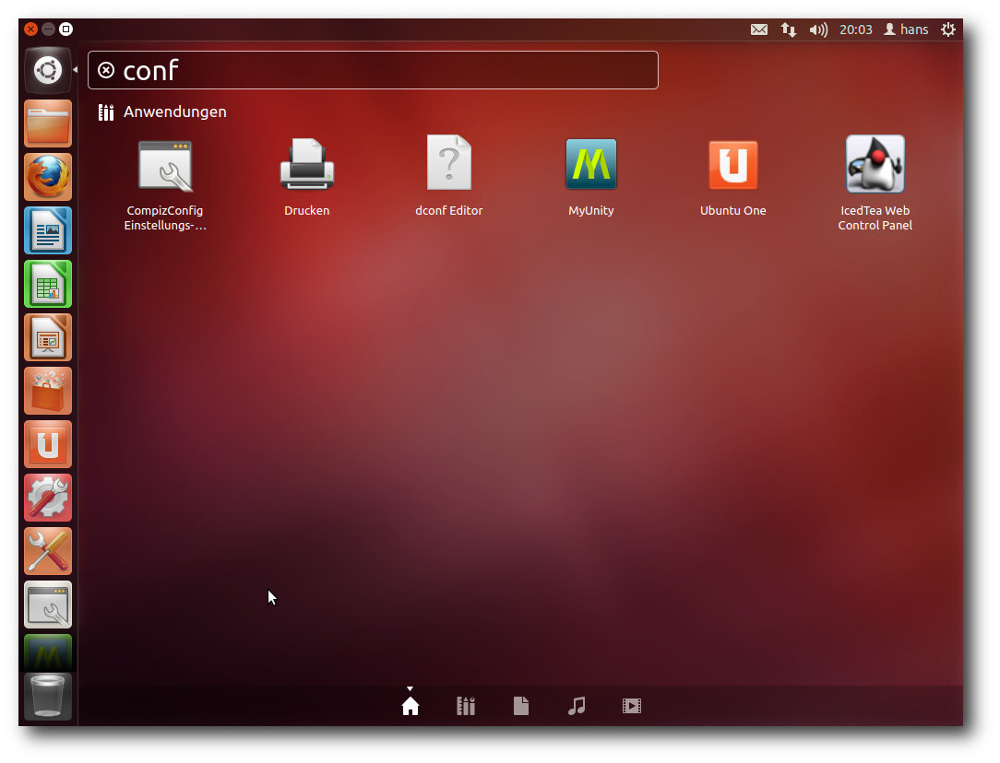Unity-Übersichtsseite mit Linsen.
Installation
Ubuntu wird meist von einem Live-System aus, das als CD und umfangreichere DVD verfügbar ist, installiert. Die DVD wurde gegenüber früheren Versionen deutlich verkleinert und ist nur noch 1,5 GB groß, was das Herunterladen erleichtert. Ferner ist eine Installation von der Alternate-CD möglich, die im Textmodus läuft, aber wesentlich mehr Flexibilität als die grafische Installation besitzt. Für Ubuntu 12.04 [3] werden nach wie vor 384 MB RAM für den Unity-Desktop als Mindestanforderung angegeben [4]. Mehr ist allerdings besser. Auch für Kubuntu sollten es 512 MB RAM oder mehr sein. Xubuntu und die Server-Edition sollten weiterhin mit 128 MB auskommen. 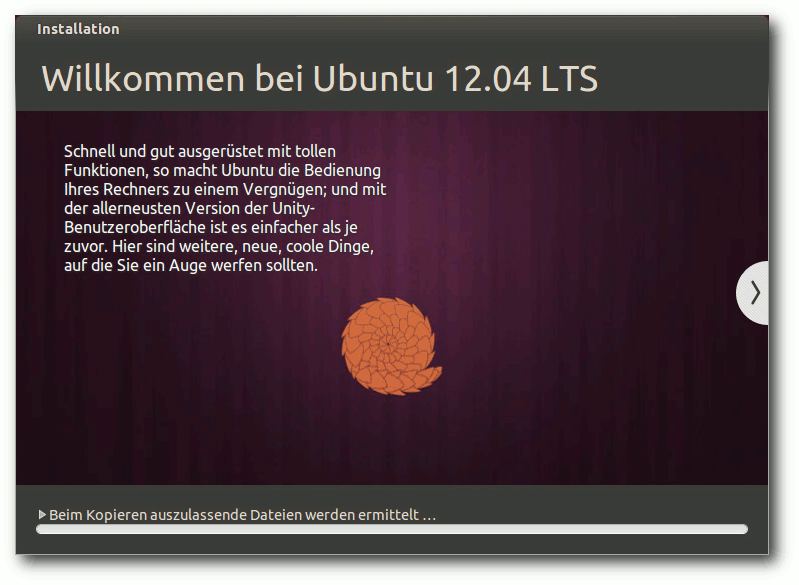Ubuntu installiert sich.
Hier soll nur die Installation von der Desktop-DVD kurz vorgestellt werden. Wer den Logical Volume Manager (LVM) verwenden will, muss zur textbasierten Installation von der DVD oder der Alternate-CD wechseln, da diese Möglichkeit im grafischen Installer weiterhin fehlt. Die Alternate-Installation läuft ansonsten fast genauso ab wie die grafische Installation. Durch Boot-Optionen steht aber eine erweiterte Installation zur Verfügung, mit der man weitgehende Kontrolle über den ganzen Vorgang hat. Auch die auf Laptops zu empfehlende Option, die gesamte Festplatte zu verschlüsseln, gibt es nur auf der Alternate-CD. Die Installation unterlag keinen sichtbaren Änderungen gegenüber der letzten Version. Standardmäßig wird nur eine einzige große Partition mit dem Dateisystem ext4 sowie eine Swap-Partition angelegt. Will man mehr Flexibilität, muss man „Etwas anderes“ auswählen, wodurch das Partitionierungswerkzeug gestartet wird. Dort können die gängigen Dateisysteme einschließlich Btrfs ausgewählt werden. Direkt nach der Definition der Partitionen beginnt der Installer mit der Partitionierung und der Installation der Pakete im Hintergrund. Ein Fortschrittsbalken zeigt von hier an den Stand der Installation an. Parallel dazu kann man die Zeitzone auswählen und danach das gewünschte Tastatur-Layout einstellen. 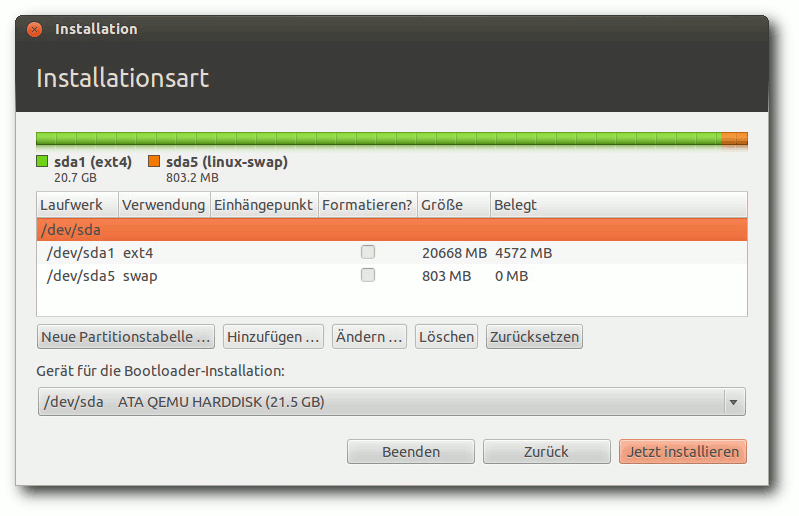
Partitionierungswerkzeug.
Im letzten Schritt gibt man seinen Namen, Anmeldenamen, Passwort und den Computernamen ein. Wenn zuvor bereits per DHCP ein Name ermittelt werden konnte, wird dieser als Vorgabe angezeigt. Wenn erkannt wird, dass die Installation in einer virtuellen Maschine läuft, wird dagegen der Name benutzer-virtual-machine vorgegeben. Optional können Daten im Home-Verzeichnis verschlüsselt werden. Während man das Ende der Installation abwartet, kann man nun noch einige Tipps zu Ubuntu ansehen.
Ausstattung
Sowohl Ubuntu als auch Kubuntu starten schnell, mindestens genauso schnell wie in der Vorversion. Wieder wurde das Aussehen des Desktops leicht modifiziert, unter Kubuntu etwas mehr als unter Ubuntu. X.org 7.6 mit dem X-Server 1.11.3 und Mesa 8.0.2 bilden die Basis für die grafische Oberfläche einschließlich der 3-D-Beschleunigung. Der Kernel 3.2.14 ist zwei Versionen neuer als in Ubuntu 11.10 und ein langfristig unterstützter Kernel. Aus Benutzersicht bedeutet das eine Vielzahl zusätzlicher Treiber und viele Optimierungen. Daneben enthält der Kernel viele neue Features, die nur für Spezialisten von Interesse sind. Für Entwickler stehen GCC 4.6.3, Python 2.7.3 und 3.2.3, OpenJDK 6b24 und 7u3 und vieles mehr bereit. Die DNS-Auflösung wird jetzt von dem immer installierten dnsmasq übernommen, wovon sich der Distributor eine schnellere Auflösung und bessere VPN-Unterstützung verspricht. Serverseitig wurden die neue Metal as a Service (MAAS) Infrastruktur [5] und der Juju Charm Store eingeführt. OpenStack wurde auf die neueste Version Essex aktualisiert. Zentyal und OpenMPI 1.5 für ARM wurden den Repositorys hinzugefügt. Das in Version 1.0 enthaltene KVM erlaubt nun virtuelle Maschinen innerhalb von virtuellen Maschinen. Damit können Instanzen, die in einer Cloud laufen und somit bereits selbst virtuelle Maschinen sind, eigene virtuelle Maschinen definieren. 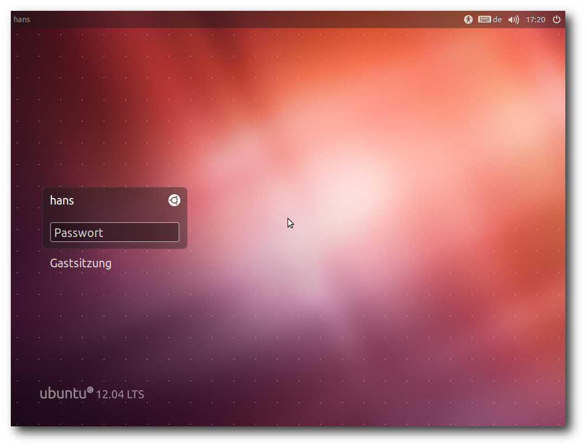Der Login-Bildschirm von LightDM.
Wie gewohnt hat Root keinen direkten Zugang zum System, sondern die Benutzer der Gruppe sudo können über das Kommando sudo Befehle als Root ausführen. Der Gruppenname sudo ist neu in dieser Version; der bisherige Gruppenname admin funktioniert aber immer noch. Wenn man, nachdem man als Root eingeloggt ist, ein Passwort vergibt, ist auch das direkte Einloggen als Root möglich. Unity und KDE benötigen in der Standardinstallation mit einem geöffneten Terminal-Fenster jetzt fast gleich viel Speicher – etwa 380 MB RAM einschließlich der im Swap ausgelagerten Seiten. Die Messung des Speicherverbrauchs der Desktops kann jeweils nur ungefähre Werte ermitteln, die zudem in Abhängigkeit von der Hardware und anderen Faktoren schwanken. Aber als Anhaltspunkt sollten sie allemal genügen. Bei der Geschwindigkeit lässt sich kein nennenswerter Unterschied zwischen den Desktops feststellen, sofern genug RAM vorhanden ist. Mit den hier verwendeten 768 MB RAM laufen die meisten Aktionen flüssig.
Unity
Unity ist das große Desktop-Thema für Ubuntu. Nachdem Kubuntu zum Gemeinschaftsprojekt heruntergestuft wurde, gibt es keine Desktopumgebung mehr, die ganz gleichberechtigt neben Unity steht. Dennoch soll im nächsten Abschnitt auch KDE betrachtet werden, da es eines der wichtigsten Desktop-Systeme für Linux ist. In dieser Version wurde Unity wieder stark überarbeitet, poliert und zum krönenden Abschluss gebracht. Unter Unity arbeiten viele Komponenten von GNOME 3. Das eigentliche Unity setzt eine Hardwarebeschleunigung der 3-D-Grafik voraus und nutzt den Compositing-Manager Compiz. Steht keine Hardwarebeschleunigung zur Verfügung, wird automatisch Unity 2D genutzt, das kaum vom normalen Unity zu unterscheiden ist. Zwar ist Unity 2D mit Qt implementiert und dürfte sich damit intern erheblich von Unity unterscheiden, aber es nutzt sogar Grafikeffekte, wenn auch weniger als Unity. Die größte Änderung in dieser Version von Unity ist natürlich das Head-Up-Display (HUD). Es funktioniert tatsächlich so wie angekündigt [6] und stellt eine echte Innovation und Bereicherung dar. Die Funktionsweise ist, dass nach einem kurzen Drücken der „Alt“-Taste eine Eingabemaske erscheint, die eine Suchfunktion für die Menüpunkte der Anwendung implementiert. Sie unterstützt die inkrementelle Suche, d. h. mit jeder eingegebenen Taste wird das Ergebnis verfeinert. Das System führt eine unscharfe Suche durch und zeigt alle passenden Menüpunkte unmittelbar an. Daraus kann man schnell den gewünschten auswählen. 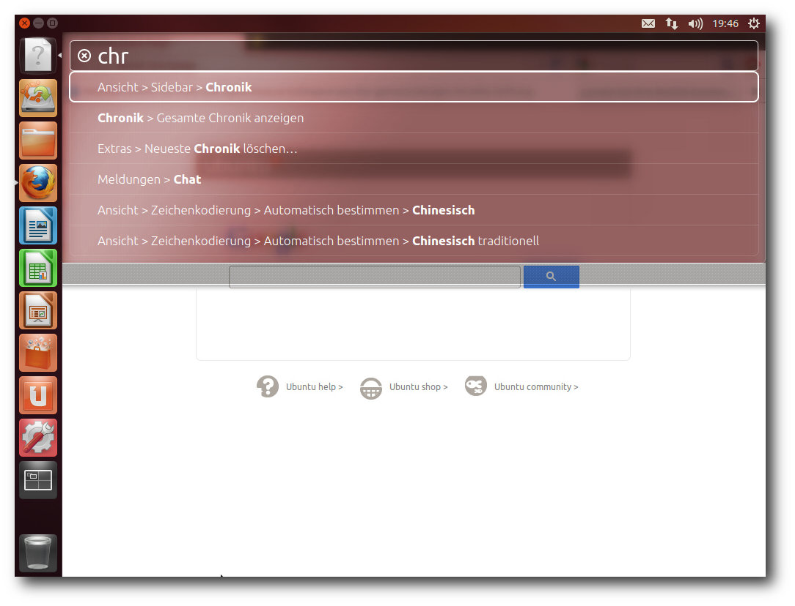Das HUD mit Firefox.
Das System ist lernfähig und stellt die Menüeinträge ganz oben dar, die man am häufigsten gewählt hat. Neben der aktiven Anwendung werden auch Systemaktionen in die Auswahl einbezogen, so dass man auch schnell Funktionen erreichen kann, die in den System-Menüs liegen. Will man das HUD loswerden, ohne einen Eintrag auszuwählen, muss man noch einmal „Alt“ drücken. Die größte optische Änderung von Unity ist in dieser Version, dass der Starter immer sichtbar bleibt. Es lässt sich auch konfigurieren, dass der Starter wie früher ausgeblendet wird, wenn er gerade nicht benötigt wird. Die Icons im Starter zeigen nützliche Informationen an, z. B. wieviele Fenster einer Anwendung offen sind und ob sie aktiviert sind. Zudem ist der Programmstart an animierten Icons zu erkennen. Optisch verbindet der Starter also Nützliches und Angenehmes. Und endlich einmal werden Effekte so angewandt, dass sie nützlich sind und nicht stören. Es sind solche eher kleinen Details, die die Arbeit angenehm machen. Die in der letzten Version eingeführten „Linsen“ sind im Wesentlichen gleich geblieben. Die Startseite (Dash) enthält eine allgemeine Suche, daneben gibt es noch Linsen für Anwendungen, Dateien, Musik und Videos. Die Suchergebnisse beziehen auch Musik und Videos aus dem Ubuntu One Online-Shop ein. Richtig konfigurierbar ist Unity auch weiterhin nicht. Die schon erwähnte Einstellung des Starters, immer oder nur bei Bedarf sichtbar zu sein, ist die einzige direkt zugängliche, und in die Systemeinstellungen integriert. Einiges mehr kann man über Compiz konfigurieren. Dazu muss man CompizConfig nachinstallieren. Für noch mehr Konfigurierbarkeit sollte man auch dconf-tools installieren. Allerdings ist besonders letzteres Programm eher für Experten. Leicht zu benutzen ist dagegen das neue MyUnity. Es erlaubt allerdings auch nur eine begrenzte Zahl von Einstellungen, darunter die Auswahl von Themes. Weitere Eingriffsmöglichkeiten bieten die Indikator-Applets [7]. 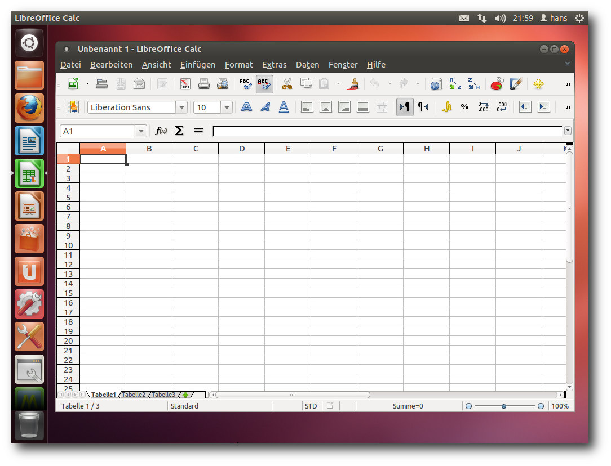
Tradition: So kann Unity nach einigen Änderungen aussehen.
Die drei größten Kritikpunkte an Unity, neben den begrenzten Einstellmöglichkeiten, dürften die Scroll-Indikatoren anstelle der Scrollbalken, die Anordnung der Fenster-Buttons links und das globale Menü sein. Für die Anordnung der Fenster-Buttons ist kein guter Grund ersichtlich, und wer sich nicht daran gewöhnen will, kann
$ gconftool-2 --set /apps/metacity/general/button_layout --type string "menu:minimize,maximize,close"
eingeben, und der Spuk ist vorbei. Die normalen Scrollbalken lassen
sich mit einer Compiz-Einstellung wieder herstellen, und wem das
von den Anwendungen getrennte und in das Panel verlegte
Anwendungsmenü nicht zusagt, der kann das Paket indicator-appmenu
entfernen – damit hört aber anscheinend auch das HUD auf zu
funktionieren. Bevor man also alles umbiegt, sei aber noch gesagt,
dass die Änderungen für kleine Bildschirme durchaus sinnvoll sind.
So sparen sie durchaus Platz, auf entsprechenden Geräten sollte man
sie vielleicht besser beibehalten.
Erweiterungen von Unity gibt es in geringem Umfang – zusätzliche
Linsen und Indikator-Applets sind teilweise aus externen
Repositorys verfügbar. Nicht vorgesehen ist dagegen eine
Sitzungsverwaltung, da die Entwickler dafür keine Notwendigkeit
sahen. Diese Entscheidung ist zumindest für Desktops und Laptops
einigermaßen fragwürdig.
Das globale Menü, sofern man es beibehält, funktioniert ebenso mit
KDE-Anwendungen. Auch das HUD spielt mit KDE-Programmen zusammen, so
dass sich KDE-Anwendungen sehr gut in Unity integrieren und fast
keinen Unterschied zu GNOME-Anwendungen aufweisen.
Der Desktop ist natürlich nicht Unity allein. Ubuntu hat nun GNOME 3.4
integriert, und wer will, kann den originalen GNOME-Desktop
durch die Installation der GNOME-Shell oder des GNOME-Panels
(„klassisches“ GNOME) wieder herstellen. Das GNOME-Mailprogramm
Evolution wurde allerdings durch Mozilla Thunderbird 12 ersetzt, der
wie Firefox eine Integration in den Starter und das Menü aufweist.
Als Webbrowser ist jetzt Firefox 12 dabei. Das Standard-Office-Paket
ist LibreOffice 3.5.2.2. Installiert sind auch Inkscape 0.48.3.1,
GIMP 2.6.12, Shotwell 0.12.2, Pitivi 0.15.0, sowie die
GNOME-Anwendungen Empathy, Gwibber
und Totem. Der
Remote-Desktop-Client Vinagre wurde durch Remmina 1.0.0 ersetzt.
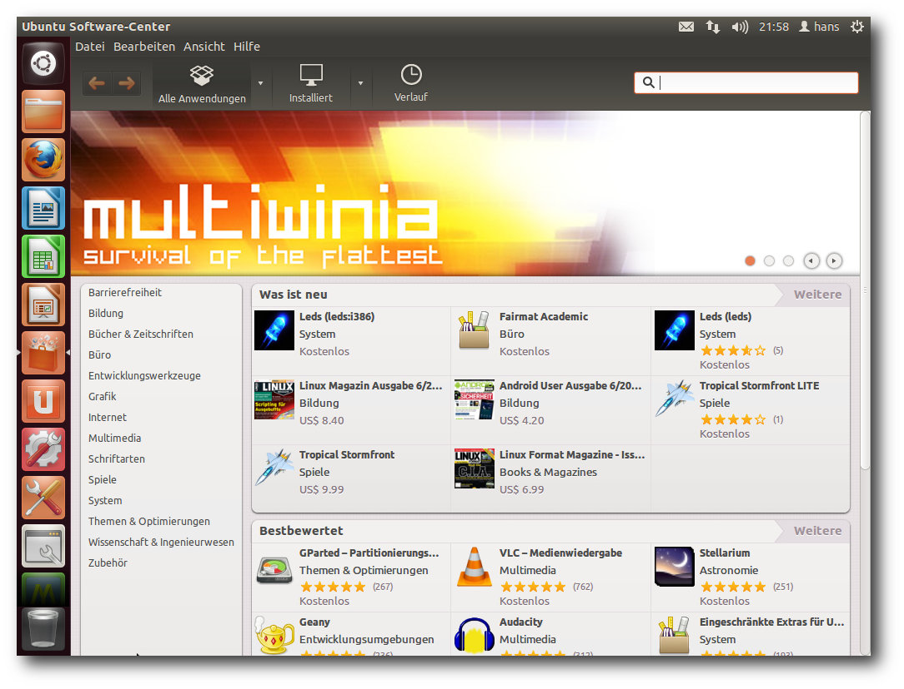Das Software Center.
Das Software-Center, das Hauptwerkzeug zur Installation und Verwaltung von Paketen, nicht jedoch zum Einspielen von Updates, wurde weiter verbessert. Das Programm startet mit einem Werbebanner (für Anwendungen aus dem Repository) sowie Listen von neuen und bestbewerteten Anwendungen. Gegenüber der Vorversion gibt es nun die Möglichkeit, sich Empfehlungen geben zu lassen. Um diese zu erhalten, muss das Programm allerdings von Zeit zu Zeit eine Liste der installierten Anwendungen an Canonical senden. Diese Option muss daher von Hand eingeschaltet werden. Wenn man ein proprietäres Programm einkauft, kann man jetzt auch mit Paypal zahlen. Man kann eigene Anwendungen in ein Web-Verzeichnis hochladen und mit anderen gemeinsam nutzen. Die Detailbeschreibung einer Anwendung kann nun mehrere Screenshots oder Videos enthalten. Außerdem wird es leicht möglich sein, mehrere Versionen eines Programmes zu installieren, da das Ubuntu-Backports-Projekt künftig verstärkt neue Versionen von Programmen bereitstellen soll. Hierzu ist das Repository precise-backports standardmäßig aktiviert. Für die neueren Versionen gibt es aber von Ubuntu keine Updates und keinen Support.
KDE (SC)
In Kubuntu [8] wurde KDE SC auf die Version 4.8.2 aktualisiert. Diese Version soll unter anderem schneller und stabiler sein als Version 4.7. So wurde die Display-Engine des Dateimanager Dolphin unter diesem Aspekt überarbeitet. Der Standard-Browser ist Rekonq, jetzt in Version 0.9.1. Man braucht kein Prophet zu sein, um Rekonq ähnlich wie Konqueror völlige Bedeutungslosigkeit zu bescheinigen, denn er besitzt keine Plug-ins und keine der fortgeschrittenen Funktionen von Firefox. 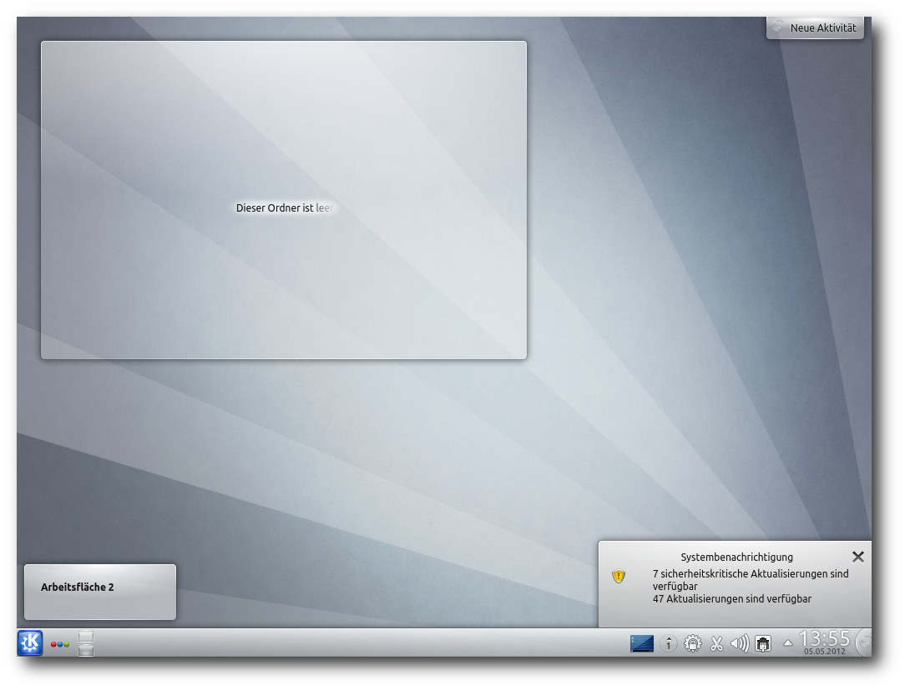Desktop von Kubuntu.
Als Musik-Player vorinstalliert ist Amarok 2.5, das jetzt an den Amazon-MP3-Shop angebunden ist. OwnCloud wurde erweitert und bringt jetzt unter anderem einen Streaming-Musikplayer mit. 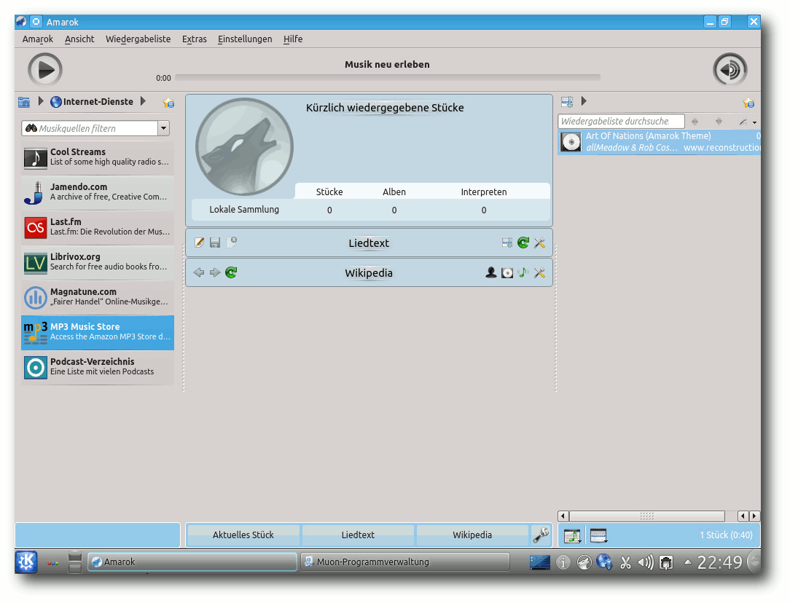
Amarok.
knotify4, dem man in der letzten Version noch übermäßigen Ressoucenverbrauch anlasten musste, wurde offenbar korrigiert und verhält sich jetzt unauffällig. Die Paketverwaltung Muon wurde laut den Entwicklern schneller und robuster, und die zugehörige „Muon-Aktualisierungsverwaltung“ wurde überarbeitet. Leider findet die vereinfachte Oberfläche Muon-Programmverwaltung bei weitem nicht alles, so die unten erwähnten Pakete kubuntu-low-fat-settings und kde-window-manager-gles. Nur mit dem Programm Muon-Paketverwaltung wird man fündig. Ganz schön viel Verwirrung für ein Programm, das man mühelos durch Software-Center hätte ersetzen können. Das Software-Center zieht zwar zahlreiche GTK/GNOME-Bibliotheken nach sich und wurde deshalb von den Kubuntu-Entwicklern nicht aufgenommen, aber diese Bibliotheken benötigt man in der Regel sowieso irgendwann. 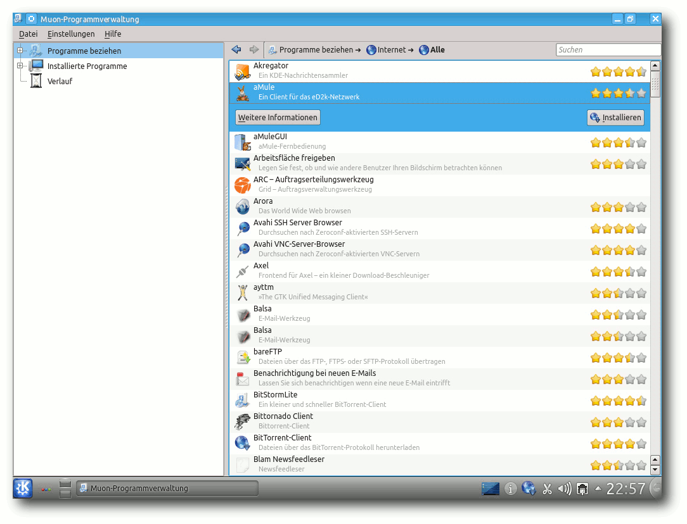
Die Paketverwaltung Muon.
Damit sich GTK-Anwendungen gut in KDE integrieren, wurde Oxygen-GTK 3 installiert. Die Standard-Büroanwendung ist auch unter KDE LibreOffice, jedoch steht Calligra 2.4 in den Repositorys zur Verfügung. Ebenfalls steht Telepathy für Instant Messaging zur Verfügung, das auf Wunsch das vorinstallierte Kopete ersetzt. Kubuntu hat an alle Benutzer gedacht, die die Leistung ihres KDE maximieren wollen und bietet ein Paket kubuntu-low-fat-settings an, das einige Dienste entfernt und somit Speicher spart. Außerdem kann man mittels des experimentellen Pakets kde-window-manager-gles eine Anpassung von KWin an OpenGL ES ausprobieren. OpenGL ES stellt wie OpenGL 3-D-Hardwarebeschleunigung für die Effekte von KWin bereit, soll aber, da es sich um eine Untermenge handelt, kompatibler sein.
Multimedia im Browser und auf dem Desktop
Firefox ist jetzt in Version 12 enthalten. Mehrere Plug-ins zum Abspielen von Videos in freien Formaten sind vorinstalliert. Die vorinstallierte Erweiterung Ubuntu Firefox Modifications hat Version 2.0.2 erreicht. Darin ist der Plugin-Finder-Service enthalten, mit dem sich komfortabel passende Plug-ins finden und installieren lassen sollten, wenn man beispielsweise ein Video in einer Webseite abspielen will. Das funktionierte bei mir in keinem Fall, was aber auch in der letzten Version schon so war. So funktionieren ohne weiteres Zutun Videos bei einigen Anbietern (z. B. tagesschau.de), bei anderen nicht (heute.de). Flash ist wiederum ein anderes Thema. Standardmäßig ist kein Flash-Player vorinstalliert, so dass sich kein Flash-Video abspielen lässt. Man muss also von Hand ein Flash-Plug-in für Firefox installieren, dabei hat man die Wahl zwischen dem freien Lightspark (browser-plugin-lightspark) und dem Adobe Flash Player. Im Endeffekt bleibt nur letzterer, da Lightspark nach wie vor bei vielen Videos versagt. Die Alternative zu Flash, das WebM-Format, sollte in Firefox seit Version 4 kaum Probleme bereiten und im Großen und Ganzen funktionieren. Das gleiche Bild zeigt sich unter KDE, auch wenn dort Rekonq statt Firefox zum Einsatz kommt. 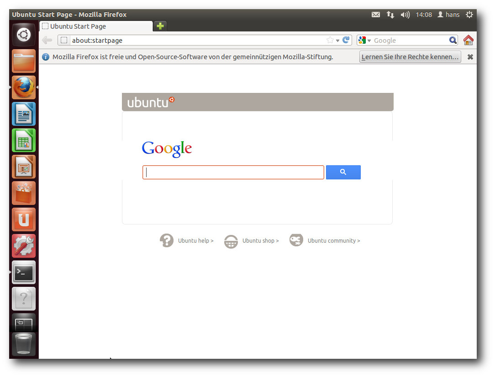Startseite von Firefox.
In den bekannten Anwendungen Rhythmbox, das jetzt wieder Banshee in der Standardinstallation ersetzt hat, und Totem sollte bei standardmäßig nicht unterstützten Formaten eine Dialogbox erscheinen, die eine Suche nach passenden GStreamer-Plug-ins ermöglicht und sie installiert. Wenn Ubuntu mehr als ein Paket findet, das geeignet ist, kann man auswählen, welches installiert werden soll. Beim MP3-Format sind das beispielsweise ein Fluendo-Plug-in und eine GStreamer-Plug-in-Sammlung. Es ist zu empfehlen, das Fluendo-Plug-in zu ignorieren, so dass das FFmpeg-Plug-in installiert wird. Die Erkennung der benötigten Formate funktioniert in manchen Fällen, in manchen leider nicht. Es kann also unter Umständen nötig sein, weitere GStreamer-Pakete von Hand zu installieren, beispielsweise für das MPEG2-Format. 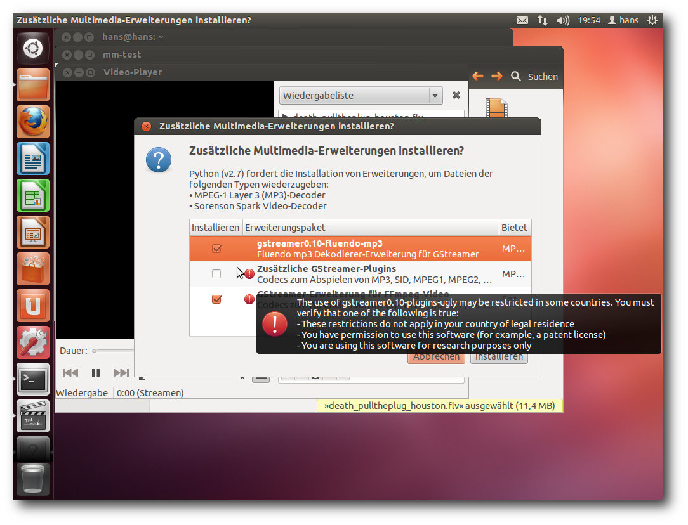
Installation von Codecs.
Unter KDE funktioniert das im Prinzip genauso. Amarok ist der Standard-Audioplayer. Amarok oder Dragonplayer erkennen fehlende Plug-ins und starten die Paketverwaltung, um danach zu suchen. Es kann jedoch passieren, dass beim ersten Installationslauf nicht alle benötigten Plug-ins installiert wurden – womöglich erkennen die Programme immer nur eine fehlende Komponente nach der anderen. In einem Fall waren sage und schreibe drei Startversuche nötig, bis alle Plug-ins vorhanden waren. Im Dateimanager Dolphin fehlt weiterhin eine Dateizuordnung von Dateien mit dem Suffix .flv. Wenn man diese mit „Öffnen mit... “ hinzufügt, kann man z. B. Dragonplayer als Programm eintragen, dann läuft alles rund. Insgesamt ist der Test zur Multimedia-Integration knapp bestanden. Optimal ist das alles nicht, aber immerhin besser als in der Version 11.10.
Fazit
Ubuntu hat es geschafft, mit dem Ende des Zweijahreszyklus eine ausgereifte, stabile und in vielfacher Hinsicht attraktive Distribution zu produzieren. Während ich die Ubuntu-Versionen, die zwischen zwei LTS-Versionen liegen, mittlerweile als reine Betaversionen ansehe, gilt das für die LTS-Versionen nicht. Diese sind stabil und ausgereift, wobei etwaige anfängliche Probleme unvermeidlich sind, aber nachträglich noch behoben werden. Und mit Version 12.04 LTS steht zweifellos die beste Ubuntu-Version bisher zur Verfügung. Sicher hat es Mark Shuttleworth durchaus ernst gemeint, als er die intensivierte Qualitätssicherung vor kurzem hervorhob [9]. Allen Benutzern, von Einsteigern bis zu erfahrenen Anwendern und Entwicklern, kann Ubuntu 12.04 empfohlen werden. Normale Benutzer sollten immer bei einer LTS-Version bleiben, da diese die beste Stabilität bietet. Dabei ist es bedarfsweise möglich und relativ einfach, veraltete Software-Versionen durch neuere zu ersetzen. Die Wahl des Desktop-Systems bleibt weiterhin eine Geschmacksfrage. Mit Unity hat Ubuntu zwar eine klare Präferenz gesetzt, schließt aber Alternativen nicht aus. Die Entwicklung von Unity hatte kommerzielle Hintergründe, die durchaus nachvollziehbar sind, denn es geht schließlich um die Verbreitung von Ubuntu auf verschiedensten Gerätetypen und somit um Einnahmequellen für Canonical. Das Ergebnis kann sich jetzt in jeder Hinsicht sehen lassen, wird aber mit Sicherheit nicht jeden zufriedenstellen. Aber ob Unity, KDE, GNOME, Xfce, LXDE oder eine andere Oberfläche, ist letztlich jedem Benutzer selbst überlassen. Das System bleibt in jedem Fall dasselbe. Links[1] http://www.pro-linux.de/artikel/2/1567/ubuntu-und-kubuntu-1204-lts.html
[2] http://www.freiesmagazin.de/freiesMagazin-2010-06
[3] https://help.ubuntu.com/12.04/
[4] https://wiki.ubuntu.com/PrecisePangolin/ReleaseNotes/UbuntuDesktop
[5] http://www.pro-linux.de/news/1/18238/canonical-bringt-metal-as-a-service-maas.html
[6] http://www.pro-linux.de/news/1/17957/head-up-display-revolutioniert-menues-in-ubuntu-1204.html
[7] http://wiki.ubuntuusers.de/Unity/FAQ
[8] http://www.kubuntu.org/
[9] http://www.pro-linux.de/news/1/18289/ubuntu-1210-soll-quantal-quetzal-heissen.html
| Autoreninformation |
| Hans-Joachim Baader (Webseite) befasst sich seit 1993 mit Linux und ist einer der Betreiber von Pro-Linux.de. |
Diesen Artikel kommentieren
Zum Index
Der Mai im Kernelrückblick
von Mathias Menzer Basis aller Distributionen ist der Linux-Kernel, der fortwährend weiterentwickelt wird. Welche Geräte in einem halben Jahr unterstützt werden und welche Funktionen neu hinzukommen, erfährt man, wenn man den aktuellen Entwickler-Kernel im Auge behält.Entwicklung von Linux 3.4
Zusammen mit der letzten Ausgabe von freiesMagazin gab es die sechste Entwicklerversion des Kernels 3.4 [1]. Diese Version hatte durchweg Fehlerkorrekturen im Programm, wenn man von Änderungen am Controller für die USB-2.0-Schnittstelle des Tegra-Chipsatzes aus dem Hause NVIDIA absieht. Hier wurde der Treiber für das Power Management so angepasst, dass er den von anderen USB-Treiber bekannten Spezifikationen entspricht. Somit können Entwickler künftig Standard- anstelle von Treiber-spezifischen Methoden nutzen und gleichzeitig bleibt der Treiber ohne größere Nacharbeit kompatibel zu den laufenden Änderungen an den USB-Kernkomponenten. Die Änderungen am -rc7 [2] waren wieder sehr überschaubar. Die herausstechendste Änderung war die Rücknahme einer Behelfslösung für ein Problem zwischen dem i2c-Datenbus und dem freie Grafiktreiber Nouveau. Sie war als Quelle anderer Probleme erkannt worden und konnte wieder entfernt werden, da das ursprüngliche Problem zwischenzeitlich auf Seiten i2c behoben worden war. Dies blieb dann allerdings die letzte Entwicklerversion, denn anstelle eines -rc8 gab Torvalds den Kernel 3.4 frei [3]. Er konnte noch die Korrektur eines Fehlers mit dem Linker [4], der beim Kompilieren und Linken von x86-spezifischen Code auftritt, vorweisen.Die Neuerungen von Linux 3.4
Mit nur 63 Tagen Entwicklungsdauer zählt Linux 3.4 zu den am Kernel-Versionen, die ihren Entwicklungszyklus im Schnelldurchlauf hinter sich gebracht haben. Linux 3.0 kommt mit 64 Tagen dicht heran, doch der aktuellste Kernel war schneller. Dies tut den enthaltenen Neuerungen jedoch keinen Abbruch. Btrfs wird derzeit noch nicht für den Einsatz in produktiven Umgebungen empfohlen, doch die Entwicklung bewegt sich mit großen Schritten in eben jene Richtung. Nicht die Sicherheit, sondern die Rettung von Daten aus einem zerstörten Dateisystem hat das neue Werkzeug „btrfs-restore“ zum Ziel. Metadaten, also Informationen rund um die eigentlichen zu speichernden Daten herum, können nun in bis zu 64 KB großen Blöcken abgelegt werden, bislang waren maximal 4 KB möglich. Im Ergebnis soll hier weniger Fragmentierung auftreten, was sich auch besser auf die Leistung auswirkt. Verbesserungen in der Fehlerbehandlung, Btrfs gibt dem Nutzer nun aussagekräftige Fehlermeldungen aus und versetzt sich selbst in einen Nur-Lesen-Modus, runden das ganze ab. Auf der Grafik-Seite braucht sich Linux 3.4 auch nicht zu verstecken. Die neuen Kepler-Chips (GeForce 600 Serie) aus dem Hause NVIDIA werden fast von Beginn an von dem freien Treiber „Nouveau“ unterstützt, wenn auch noch ohne die 3-D-Beschleunigung. Auch mit Radeon 7xxx und den Grafikeinheiten der Trinity-Prozessoren kann Nouveau nun umgehen. Daneben wurde der Treiber aus dem Staging-Bereich entlassen und wird als tauglich für den breiten Einsatz angesehen. Weiterhin wird nun auch die Grafikkomponente von Intels GMA500-Chipsatz unterstützt, wenn dies im Moment auch nur als experimentell anzusehen ist. GMA500 oder „Medfield“ ist eine Plattform, die für den Einsatz in Smartphones vorgesehen ist. Ein kleines Highlight stellt die neue x32-ABI dar. Dies ist eine Schnittstelle für die Ausführung von 32-Bit-Anwendungen in einer 64-Bit-Umgebung. Zwar existieren hierfür mit x86_64 und i386 bereits passende Schnittstellen, jedoch verspricht x32 eine bessere Leistung, dafür jedoch müssen Programme speziell für die Verwendung mit x32 kompiliert werden. Bei Gerätetreibern wird dies schon länger so gehandhabt, nun kommt „Autoprobing“, die automatische Erkennung bestimmter Voraussetzungen für einen Treiber, auch für Module zum Einsatz, die die verschiedenen Erweiterungen des Prozessors betreffen. Dies soll dafür sorgen, dass künftig auch wirklich alle Module verfügbar und geladen sind, die für die Nutzung der vorhandenen CPU-Erweiterungen benötigt werden. In den Bereich der Sicherheit läuft das neue Sicherheitsmodul „Yama“. Es ermöglicht bestimmte Beschränkungen, die der Kernel mit seinen Kernkomponenten nicht umsetzen kann. Derzeit betrifft dies Funktionen rund um den Systemaufruf ptrace – Yama verhindert hier, dass Prozesse auf den Speicherbereich und Statusinformationen anderer Prozesse zugreifen können. Wer einen Blick darauf werfen möchte, wie sich Änderungen am Kernel oder Eigenentwicklungen auf die Systemleistung auswirken, dem steht der Leistungsmesser „perf“ zur Verfügung. Die Auswertung dessen Ausgaben wird nun etwas einfacher, da Reports nun mittels einer auf GTK2 basierenden Bedienoberfläche betrachtet werden können. Die Oberfläche ist allerdings noch ausbaufähig. Mancher mag nicht sicher sein, ob „dm-verity“ tatsächlich im Interesse der Linux-Anwender liegt. Diese Erweiterung für den Device Mapper [5] ermöglicht gesicherte, nicht beschreibbare Dateisysteme, deren Inhalt mittels kryptografischer Prüfsummen verifiziert wird. So wird bei jedem Lesezugriff sichergestellt, dass die Information auch die ist, die irgendwann einmal hineingelegt wurde. Dies ließe sich zum Beispiel zur Absicherung von Unterhaltungshardware insofern nutzen, dass nur überprüfte Firmware genutzt wird, wie dies zum Beispiel ChromeOS bereits vormacht. Als kleine Anekdote hierzu: Ein Mitarbeiter des Online-TV-Dienstes Netflix [6] bat um die Aufnahme der Erweiterung in den Kernel mit dem Hinweis auf Unterhaltungsgeräte, die mit Linux betrieben werden [7]. Diese Liste ist bei weitem nicht komplett. Eine sehr ausführliche, jedoch in Englisch verfasste Seite über alle neuen Funktionen und Treiber bietet KernelNewbies.org [8]. Das Merge Window für Linux 3.5 war zu Redaktionsschluss noch offen. Insofern muss es noch nichts bedeuten, dass bislang kaum Änderungen für das Dateisystem Btrfs in die Entwicklerversion des Kernels aufgenommen wurden. Anders dagegen sieht es bei den Netzwerk-Dateisystemen NFS und CIFS aus – hier findet sich bereits eine Vielzahl an Korrekturen in der Liste der eingegangenen Patches. Auch der Nouveau-Treiber weist bislang hauptsächlich Fehlerkorrekturen auf. Eine theoretisch kleinere Umstellung der Schnittstelle eines Treibers für die Fehlerkontrolle von Arbeitsspeichermodulen (EDAC) dürfte ein wenig Staub aufwirbeln. Hier müssen in nächster Zeit viele Treiber angepasst werden, die auf diese Komponente aufbauen, was eine Vielzahl an zu ändernden Dateien im Kernel-Tree bedeutet. Konkret wurden bislang die Treiber für Intels i3/i5/i7- sowie einige Xeon-Plattformen angepasst. Verschiedene AMD-bezogene Treiber und auch andere Hersteller und Architekturen werden noch im Kernel 3.5 folgen. Einen ersten Überblick über die tatsächlich zu erwartenden Neuerung des kommenden Linux-Kernels wird es jedoch frühestens in der Juli-Ausgabe von freiesMagazin geben. Links[1] https://lwn.net/Articles/496079/
[2] https://lkml.org/lkml/2012/5/12/60
[3] https://lkml.org/lkml/2012/5/20/126
[4] https://de.wikipedia.org/wiki/Linker_(Computerprogramm)
[5] https://de.wikipedia.org/wiki/Device_Mapper
[6] https://de.wikipedia.org/wiki/Netflix
[7] https://lwn.net/Articles/459422/
[8] http://kernelnewbies.org/Linux_3.4
| Autoreninformation |
| Mathias Menzer (Webseite) hält einen Blick auf die Entwicklung des Linux-Kernels und erfährt frühzeitig Details über interessante Funktionen. |
Diesen Artikel kommentieren
Zum Index
Objektorientierte Programmierung: Teil 4 – Strategie, wechsel Dich!
von Dominik Wagenführ Der Begriff der objektorientierten Programmierung (kurz OOP [1]) existiert schon eine ganze Weile. Wer zuvor prozedural programmiert hat, erwischt sich beim Übergang zu OOP öfters dabei, wie er die früheren Funktionen einfach mit einer Klasse umgibt und dies als objektorientierte Programmierung verkauft. Diese Artikelreihe soll an einem einfachen Beispiel zeigen, was man in diesem Fall besser machen könnte. Bevor man im Artikel fortfährt, sollte man sich den vorherigen Teil der Reihe durchgelesen haben (siehe freiesMagazin 05/2012 [2]).Eine neue Strategie
Von den drei bisher verwendeten Strategien war eine dabei, deren Verhalten sehr ähnlich zu den anderen beiden war. Zur Erinnerung die drei Bot-Strategien:- Immer annehmen
- Immer ablehnen
- Annahme, wenn größer gleich 200. Wenn dreimal nacheinander kleiner 200, dann immer Ablehnung; wenn dreimal nacheinander größer als 700, dann immer Annahme.
Design
Die essentiellen Fragen für das Design sind:- Wie kommen die konkreten Strategien an die anderen konkreten Strategien, zu denen sie wechseln sollen?
- Wie können sie dem Bot diese neue Strategie geschickt unterschieben?
Das Interface IStrategyContext und deren Nutzer.
Jetzt fehlt nur noch die Beschreibung der Zustände. Diese entsprechen im vorliegenden Fall den drei konkreten Strategien. Als Zustandsübergang funktioniert die Methode acceptOffer, wobei der jeweilige Übergang aus dem Zustand variable heraus an eine Bedingung geknüpft ist:
- Liegt der übergebene Wert zwischen 200 und 700 (inklusive), bleibt man in dem Zustand und setzt die Zählwerte mNumDeclineInRow und mNumAcceptInRow zurück.
- Ist der Wert kleiner als 200 und hat man schon dreimal abgelehnt, geht man in den Zustand decline über.
- Ist der Wert größer als 700 und hat man schon dreimal angenommen, geht man in den Zustand accept über.
Zustandsautomat mit der variablen Strategie als Start-Strategie.
Achtung: Der Zustandsautomat hat eine kleine Unschärfe und ist der Einfachheit halber nicht einhunderprozentig korrekt dargestellt. So fehlt nämlich die eigentliche Aktion des Zählens, wie oft ein Angebot abgelehnt oder angenommen wurde. Wenn man es sehr genau nehmen würde, dann müsste man hierfür Zwischenzustände einbauen, deren einzige Aufgabe es wäre, die jeweilige Anzahl an Ablehnungen bzw. Annahmen zu zählen. Sie wechseln nach dem Zählen ohne Zustandsübergang direkt in den nächsten Zustand, der eben von der Anzahl abhängt.
Klassenaufteilung
- Klasse:
- IStrategyContex
- Benötigt:
- –
- Verantwort.:
- Interface für Nutzer von Strategien, um neue Strategien zu setzen
- Klasse:
- BaseStrategy
- Benötigt:
- IStrategyContext
- Verantwort.:
-
Basisklasse für die konkreten Strategien, um ein Angebot anzunehmen oder abzulehnen.
Merkt sich den Kontext, in dem es benutzt wird.
- Klasse:
- AcceptStrategy
- Basisklasse:
- BaseStrategy
- Benötigt:
- –
- Verantwort.:
- nimmt ein Angebot immer an
- Klasse:
- DeclineStrategy
- Basisklasse:
- BaseStrategy
- Benötigt:
- –
- Verantwort.:
- lehnt ein Angebot immer ab
- Klasse:
- VariableStrategy
- Basisklasse:
- BaseStrategy
- Benötigt:
- StrategyFactory,
IStrategyContex - Verantwort.:
- entscheidet variabel, ob ein Angebot abgelehnt oder angenommen wird
- Klasse:
- StrategyFactory
- Benötigt:
- BaseStrategy
- Verantwort.:
- lässt neue Strategien anmelden und erstellt diese auf Zuruf
- Klasse:
- Bot
- Basisklasse:
- IStrategyContex
- Benötigt:
- BaseStrategy
- Verantwort.:
- zählt die angenommenen Punkte
- Klasse:
- Game
- Benötigt:
- StrategyFactory, Bot
- Verantwort.:
- erstellt den Bot und setzt die von der Fabrik erzeugte Strategie;
liest die Benutzereingabe und fragt Bot nach Annahme oder Ablehnung
Abhängigkeiten
Es gibt nun zwar mehr Abhängigkeiten, aber es handelt sich dabei immer nur um zusätzliche Abhängigkeiten zu einem Interface, welche sehr leichtgewichtig sind. Ebenso sind durch die Ersetzung von IStrategy durch die Basisklasse BaseStrategy keine neuen Abhängigkeiten entstanden.Vor- und Nachteile
Nachteile ergeben sich keine aus der Lösung. Der Vorteil ist, dass die Strategien nun ineinader wechseln können und diese vor allem bei komplexeren Strategien wieder verwendbar sind.Implementierung
Die potentielle zyklische Abhängigkeit von IStrategyContext zu BaseStrategy lässt sich leicht durch Vorwärtsdeklarationen lösen. Man kann in C++ sogar noch einen Schritt weitergehen und in BaseStrategy mit einer Vorwärtsdeklaration auf IStrategyContext auskommen. Der Grund ist, dass BaseStrategy das Interface nie selbst nutzt, sondern nur verwaltet. Und dafür muss es nur den Namen kennen, nicht den eigentlichen Code, der dahintersteckt. Die C++-Implementierung der obigen Klassen kann als Archiv heruntergeladen werden: oop7-beispiel.tar.gz.Abschluss
Die vier Teile zur objektorientierten Programmierung sollten einen kleinen Einblick geben, wie man aus einem einfachen Problem etwas designtechnisch extrem kompliziertes machen kann. Natürlich nicht, damit es niemand mehr versteht, sondern damit die Lösung auch für die Zukunft leicht erweiterbar und wartbar ist. Und in der Regel hilft ein gutes Design dem Verständnis. Wie im ersten Teil erwähnt, gibt es zu einer Aufgabe aber immer mehrere Lösungen. Und so gibt es für das gestellte Problem natürlich auch mehrere Designentscheidungen in die eine oder andere Richtung. Vorrangig sollten in der Reihe aber verschiedene Design-Prinzipien und Entwurfsmuster vorgestellt werden. Man sollte sich auch im Klaren darüber sein, dass eine sture Entwicklung nach dem Motto „Erst das Design, dann die Implementierung” selten funktioniert. In der Regel erkennt man während der Implementierung, dass man im Design etwas falsch gemacht hat, etwas fehlt oder einfach gar nicht in der benutzten Sprache zu realisieren ist. Daher sollte das Design zwar zuerst entstehen, während der Umsetzung aber iterativ angepasst werden.Literatur
- E. Gamma, R. Helm, R. Johnson und J. Vlissides: „Design Patterns. Elements of Reusable Object-Oriented Software“, Addison-Wesley 1994, ISBN 978-0201633610 [5]
- E. Gamma, R. Helm, R. Johnson und J. Vlissides: „Entwurfsmuster: Elemente wiederverwendbarer objektorientierter Software“, Addison-Wesley 2004, ISBN 978-3827321992 [6]
- E. & E. Freeman, B. Bates und K. Sierra: „Head First Design Patterns“, O'Reilly Media 2004, ISBN 978-0596007126 [7]
- R. C. Martin: „Clean Code - Refactoring, Patterns, Testen und Techniken für sauberen Code“, mitp-Verlag 2009, ISBN 978-3826655487 [8]
[1] https://de.wikipedia.org/wiki/Objektorientierte_Programmierung
[2] http://www.freiesmagazin.de/freiesMagazin-2012-05
[3] https://de.wikipedia.org/wiki/Zustand_(Entwurfsmuster)
[4] https://de.wikipedia.org/wiki/Dependency_Inversion_Principle
[5] http://www.amazon.de/Patterns-Elements-Reusable-Object-Oriented-Software/dp/0201633612/
[6] http://www.amazon.de/Entwurfsmuster-Elemente-wiederverwendbarer-objektorientierter-Software/dp/3827321999/
[7] http://www.amazon.de/Head-First-Design-Patterns-Freeman/dp/0596007124/
[8] http://www.amazon.de/Clean-Code-Refactoring-Patterns-Techniken/dp/3826655486/
| Autoreninformation |
| Dominik Wagenführ (Webseite) ist C++-Software-Entwickler und hat täglich mit Software-Design zu tun. Dabei muss er sich immer Gedanken machen, dass seine Software auch in Zukunft wart- und erweiterbar bleibt. |
Diesen Artikel kommentieren
Zum Index
Cloud-Backup mit Bordmitteln
von Hauke Goos-Habermann Niemand will „Backup“, alle wollen nur „Restore“. Natürlich kommt man als Nutzer nicht um das Thema „Backup“ herum, will man seine Daten nicht unnötig aufs Spiel setzen. Neben den klassischen Möglichkeiten, Daten lokal – auf externen Festplatten oder einem Netzwerkspeicher – zu sichern, könnte man auf die Idee kommen, eine Sicherung in das Internet vorzunehmen. Sogenannte „Cloud-Backup“-Lösungen gibt es viele, doch möchte man seine persönlichen Daten vielleicht nicht unbedingt einem Dienstleister anvertrauen, von dem man nicht genau weiß, was dieser mit den Daten anstellt. Außerdem sollte man eine solche Lösung keinesfalls als Ersatz für normale Backups, sondern als Ergänzung sehen. Möchte man dennoch dieses Wagnis auf sich nehmen, so sollte man von einer solchen Lösung Folgendes erwarten:- Die Daten sollten lokal verschlüsselt werden, damit keine sensiblen Informationen nach außen gelangen.
- Dateien sollten versioniert werden, um ein „Zurückspringen“ zu bestimmten vorherigen Zuständen zu ermöglichen.
- Die Backups sollten platzsparend gesichert werden.
- Das Hochladen der Backups sollte bandbreitenschonend erfolgen, denn Internet-Anschlüsse mit guten Upload-Raten sind immer noch Mangelware.
Vorbereitungen
Für die „Cloud-Backup“-Lösung „Marke Eigenbau“ benötigt man auf dem eigenen Rechner die Pakete encfs, bup, git und rsync. Der Rechner im Internet benötigt das Paket rsync neben der Möglichkeit, sich dort einzuloggen und Dateien beziehungsweise Verzeichnisse abzulegen. Die Pakete können mit der jeweiligen Paketverwaltung eingespielt werden.EncFS
Den Part des Verschlüsslers spielt die FUSE-Erweiterung EncFS [1]. EncFS wird als normaler Benutzer, nicht als Root, verwendet und benötigt lediglich zwei Verzeichnisse. Das eine enthält die verschlüsselten Daten, das andere die transparent entschlüsselten. Die Dateien und Verzeichnisse im entschlüsselten Verzeichnis sind rein virtuell und werden also nicht auf die Festplatte geschrieben. Änderungen, die im entschlüsselten Verzeichnis durchgeführt werden, werden automatisch als verschlüsselte Gegenstücke im anderen Verzeichnis abgebildet. Neben den Dateiinhalten werden auch die Datei- und Verzeichnisnamen verschlüsselt, sodass es für einen Unbefugten, der Zugriff auf das verschlüsselte Verzeichnis erhält, nur sehr schwer ist, Rückschlüsse auf den tatsächlichen Inhalt zu ziehen. Zum Anlegen der beiden Verzeichnisse und grundlegenden Konfiguration von EncFS reicht folgender Einzeiler, der im Verzeichnis des aktuellen Benutzers das Verzeichnis v für die verschlüsselten Daten und e für die entschlüsselten anlegt:$ encfs ~/v ~/e
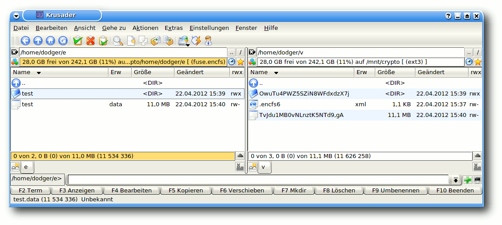Entschlüsseltes und verschlüsseltes EncFS-Verzeichnis.
Bei der Frage „Bitte wählen Sie eine der folgenden Optionen“ kann man einfach p für den vorkonfigurierten Paranoia-Modus wählen und danach einen möglichst komplizierten Passsatz angeben. Anschließend befindet sich unter v die Konfigurationsdatei .encfs*.xml mit Einstellungen zum angelegten EncFS. Ein späteres Mounten erfolgt über dasselbe Kommando. Möchte man das EncFS wieder aushängen, so macht man dies mit:
$ fusermount -u ~/e
bup
Die Software bup [2] löst gleich zwei Probleme. Zum einen archiviert bup alle übergebenen Daten und ermöglicht deren Wiederherstellung. Zum anderen werden bei jedem Speichervorgang nur die Änderungen zu bereits in bup gesicherten Daten auf der Festplatte abgelegt. Aus Anwendersicht kann man sich bup als Datenbank vorstellen, die Daten besonders effizient speichert. Gerade diese Effizienz ist wichtig, damit nur ein Minimum an Daten an den Rechner im Internet übertragen werden muss. Intern verwendet bup Strukturen des Versionsverwaltungssystems git (z. B. das git packfile format) und bietet ein wahres Füllhorn an Funktionen [3]: Den Zugriff auf den Datenbestand via Webbrowser oder als FUSE-Modul, die Möglichkeit, mit git-Programmen auf die bup-Daten zuzugreifen und die Sicherung der Datenintegrität mittels PAR2 [4].bup-Repository erstellen
Bevor man mit bup arbeiten kann, muss man ein bup-Repository erstellen. bup legt hierbei standardmäßig seine Daten unter ~/.bup, also im jeweiligen Heimatverzeichnis des aktiven Benutzers, ab. Möchte man den Pfad ändern, so geschieht dies über den Parameter -d <Pfad>. Als ersten Test kann man mittels des folgenden Befehls ein temporäres bup-Archiv (für den Produktivbetrieb muss natürlich ein anderes Verzeichnis gewählt werden) anlegen:$ bup -d /tmp/b init
Daten an bup senden
Bup sieht zwei verschiedene Arten vor, wie Daten zum Speichern eingereicht werden können. Über das Kommando split können beliebige Datenströme (z. B. die Ausgabe von tar oder dd) in bup umgeleitet werden. Um beispielsweise das eigene Heimatverzeichnis in bup zu sichern, könnte man folgenden Einzeiler verwenden:$ tar cv ~ | bup -d /tmp/b split -n "tar-Test"
Diese Methode hat den Vorteil, dass auch Zugriffsrechte sowie
Benutzer- und Gruppenzugehörigkeiten gesichert werden, hat aber auch
den Nachteil, dass man nicht gezielt auf einzelne Dateien der
Sicherung zurückgreifen kann. Mit -n wird hierbei der Name des
Backup-Satzes angegeben. Für regelmäßige Backups (und der Ordnung
wegen) empfielt es sich, für verschiedene Aufgaben eigene
Backup-Sätze zu verwenden (z. B. konfig für /etc oder meins für
~). Für die Effizienz von bup ist es allerdings unerheblich,
wieviele Backups ein Backup-Satz enthält, da immer nur Differenzen
zu allen zuvor in bup gesicherten Daten gespeichert werden.
Möchte man auf einzelne Dateien in bup über FUSE [5], den integrierten Webserver oder das
Kommandozeilenwerkzeug zugreifen können, so geschieht die Sicherung
über:
$ bup -d /tmp/b index ~
$ bup -d /tmp/b save -n "datei-Test" ~
Die erste Zeile legt eine Liste aller zu sichernden Dateien und
Verzeichnisse an, die zweite sichert diese anschließend in der
bup-Datenbank. Diese Variante hat aber (derzeit) den Nachteil, dass
keine Dateirechte gesichert werden.
$ bup -d /tmp/b save -n "datei-Test" ~
Daten aus bup herausbekommen
Das Ablegen von Daten in bup ist relativ einfach. Doch wie kommt man an die Daten wieder heran? Da bup intern die git-Struktur verwendet, bei der jedes Backup über eine eindeutige „CommitID“ auffindbar ist, wird für das Wiederherstellen eines Datenstromes ebendiese Nummer benötigt. Zum Auflisten dieser Nummern für das oben angelegte tar-Backup dient das git-Programm selbst:$ GIT_DIR="/tmp/b" git log "tar-Test"
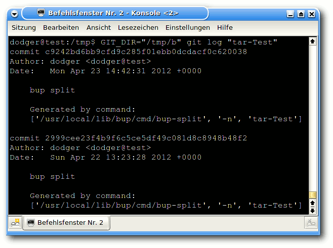Das git-Protokoll mit erfolgten Sicherungen.
Jede Sicherung wird im git-Protokoll mit CommitID, dem Ersteller des Backups sowie dem Zeitpunkt der Sicherung vermerkt. Zum Auslesen dient das Kommando join, dem die CommitID übergebenen wird:
$ bup -d /tmp/b join c9242bd6bb9cfd9c285f01ebb0dcdacf0c620038 | tar xv
Auf einzelne Dateien in bup kann man mittels des Kommandos fuse
via beliebiger Dateimanager lesend zugreifen:
$ mkdir /tmp/mountpunkt
$ bup -d /tmp/b fuse /tmp/mountpunkt
Möchte man dem FUSE-Modul beim Arbeiten zusehen, so erweitert man
den Aufruf nach fuse noch um -f. Anschließend kann man im
Dateimanager /tmp/mountpunkt als Adresse angeben und Dateien aus
dem Archiv heraus kopieren.
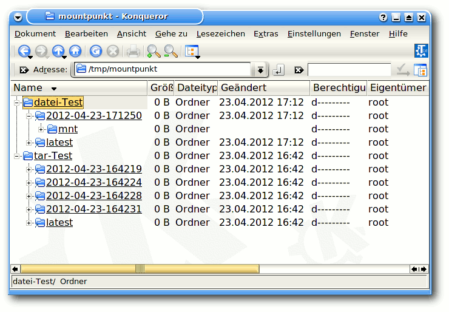$ bup -d /tmp/b fuse /tmp/mountpunkt
bup-Archiv via FUSE gemountet.
Um den Zugriff über FUSE zu beenden und bup aus dem Verzeichnis auszuhängen, genügt:
$ fusermount -u /tmp/mountpunkt
Der Zugriff über den Webbrowser geschieht ähnlich:
$ bup -d /tmp/b web
Der bup-Webserver lauscht nun an Port 8080 und nimmt Verbindungen
entgegen. Im Browser gibt man in der Adresszeile
http://127.0.0.1:8080 an und kann dann Dateien aus bup
herunterladen. Den Server beendet man nach getaner Arbeit über die
Tastenkombination „Strg“ + „C“.
Von der Kommandozeile kann man natürlich auch seine Backups
wiederherstellen. Hierzu dient das bup-Kommando restore. Dieses
benötigt zusätzlich zum Namen des Backup-Satzes auch noch das Datum
der Sicherung. Möchte man die letzte Sicherung
wiederherstellen, so
lautet das Datum latest.
Zum Auflisten aller Sicherungszeitpunkte des Backup-Satzes
datei-Test dient:
$ bup -d /tmp/b ls datei-Test | sort -r
Der folgende Einzeiler stellt schließlich alle Dateien und
Verzeichnisse aus datei-Test vom Datum 2012-04-23-171250 im
aktuellen Verzeichnis wieder her:
$ bup -d /tmp/b restore "/datei-Test/2012-04-23-171250/"
Und jetzt alle zusammen
Bis auf rsync, das den Transfer der Daten vom eigenen Rechner zum Server im Internet übernimmt, wurden alle Komponenten vorgestellt. Jetzt kommt es nur noch auf das Zusammenspiel an. In der Theorie soll das bup-Repository in EncFS abgelegt und dieses verschlüsselte bup-Archiv wiederum hochgeladen werden. Um die Sache zu vereinfachen, habe ich das Skript encfsBupBackup (Download unter [6]) geschrieben, das diese einzelnen Schritte zusammenfasst und für den Benutzer vereinfacht. Damit das Skript einfach genutzt werden kann, sollte man es in ein Verzeichnis, das im Pfad für ausführbare Dateien (z. B. /usr/local/bin) aufgelistet ist, ablegen und mittels chmod +x encfsBupBackup ausführbar machen. Beim ersten Aufruf von encfsBupBackup wird eine Vorlage für die Konfigurationsdatei ~/encfsBupBackup.rc angelegt, die man dann mit einem Editor anpassen muss. Neben den Verzeichnissen für EncFS und das bup-Archiv sind das EncFS-Password für das automatische Mounten, sowie die Zugangsdaten für den Internet-Server anzugeben.Daten sichern
Das Anlegen von EncFS und bup-Repository übernimmt encfsBupBackup, sodass man gleich mit dem Sichern von Daten beginnen kann:$ tar cv ~ | encfsBupBackup pipeIn "tar-Test2"
Oder auf Dateiebene:
$ encfsBupBackup filesIn "datei-Test2" ~
Das Einhängen vor dem Sichern und anschließende Aushängen
übernimmt wiederum das Skript.
Status abfragen
Zur weiteren Vereinfachung enthält encfsBupBackup Funktionen, um den Status des bup-Archives abzufragen. Neben den Protokollen, die git/bup mitbringen, legt encfsBupBackup ein Eigenes an, das die Namen der Backup-Sätze und die CommitID einer jeden Sicherung enthält. Dieses kann man sich anzeigen lassen mit:$ encfsBupBackup lsLog
Um nur die Namen aller Backup-Sätze zu bekommen, verwendet man:
$ encfsBupBackup lsBackups
Für die Auflistung der CommitIDs aus dem Backup-Satz tar-Test2
dient folgender Einzeiler:
$ encfsBupBackup lsCommits "tar-Test2"
Die Sicherungsdaten ermittelt man mittels:
$ encfsBupBackup lsDates "datei-Test2"
Daten wiederherstellen
Das Wiederherstellen eines Datenstromes anhand seiner CommitID geschieht unspektakulär via:$ encfsBupBackup pipeOut c9242bd6bb9cfd9c285f01ebb0dcdacf0c620038 | tar xv
Dateien können folgendermaßen zurückgesichert werden:
$ encfsBupBackup filesOut "datei-Test2" "2012-04-23-171250"
Der Zugriff via FUSE und Webserver geschieht über:
$ encfsBupBackup fuse /tmp/mountpunkt
bzw. über:
$ encfsBupBackup web
Was tun wenn's klemmt?
In seltenen Fällen kann es vorkommen, dass eine Wiederherstellung aufgrund angeblich fehlender Dateien nicht vorgenommen werden kann. Dies ist aber kein Grund zur Panik, denn nach dem Entschlüsseln des bup-EncFS-Archives funktioniert die Wiederherstellung tadellos. Um die Entschlüsselung vorzunehmen, verwendet man folgendes Kommando:$ encfsBupBackup decrypt
Nachfolgende Wiederherstellungsaktionen werden nun aus dem
(temporär) entschlüsselten Archiv vorgenommen. Für das Löschen des
ungeschützten Archivs gibt es:
$ encfsBupBackup rmDecrypt
Zum Überprüfen der Datenintegrität dient:
$ encfsBupBackup fsck
Hoch damit
Damit aus dem lokalen Backup auch ein „Cloud-Backup“ wird, muss es natürlich noch hochgeladen werden. Dies erledigt:$ encfsBupBackup upload
Warum das Ganze?
Meine Motivation war anfangs das Sichern von Thunderbird-Postfächern, bei denen die E-Mails jeweils in großen Dateien zusammenfasst werden. Innerhalb dieser Dateien verändert sich bei jedem Abholen oder Senden von E-Mails allerdings nur wenig. Daher macht das Sichern von kompletten Zuständen wenig Sinn. Eine intelligente Lösung, die jeweils nur die Differenz speichert, mir aber das Zurücksetzen der Postfächer auf den Zustand eines beliebigen Datums erlaubt, musste her. Nachdem ich ein Skript erstellt hatte, das den kompletten E-Mail-Backup-Vorgang mit den vorgestellten Werkzeugen abdeckte, wollte ich auch weitere Daten effizient sichern. So kam es zu der Entwicklung des Skriptes encfsBupBackup, mit dem ich beliebige Daten durch kurze Skripte sichern lassen kann. Neben den E-Mail-Postfächern sichere ich nun alle wichtigen Dateien und Dokumente sowie den Entwicklungszweig von m23 nebst Datenbank mittels encfsBupBackup. Quellen: Links[1] http://www.arg0.net/encfs
[2] https://github.com/apenwarr/bup
[3] http://zoranzaric.de/bup-cda.pdf
[4] http://de.wikipedia.org/wiki/PAR2
[5] http://fuse.sourceforge.net
[6] http://sourceforge.net/projects/dodger-tools/files/scripts/encfsBupBackup
| Autoreninformation |
| Hauke Goos-Habermann (Webseite) arbeitet freiberuflich als Entwickler und Trainer für Linux und Open Source Software. Er ist zudem Hauptentwickler des Softwareverteilungssystems m23 und weiterer OSS sowie Mitorganisator der Kieler Open Source und Linux Tage. |
Diesen Artikel kommentieren
Zum Index
Routino
von Uwe Steinmann Kaum ein Gemeinschaftsprojekt hat in kurzer Zeit soviel Zuspruch und Unterstützung erhalten wie OpenStreetMap (siehe „OpenStreetMap – Eine virtuelle Welt gedeiht“, freiesMagazin 03/2012 [1]). Die weltweite Karte hat in vielen Ländern, darunter auch Deutschland, einen Detailreichtum erlangt, der kommerzielle Kartenanbieter schlecht aussehen lässt. Ein anderes, zunehmend interessantes Anwendungsgebiet ist die Navigation auf Basis der OSM-Daten. Im Wiki von OSM [2] werden verschiedene Programme und Web-Seiten vorgestellt. Dieser Artikel greift ein Programm heraus, das etwas unglücklich im Wiki als „web-based router“ bezeichnet wird: Routino [3]. Grundsätzlich gilt: Wie hoch die Qualität der gefundenen Routen ist, hängt stark von der Genauigkeit und Vollständigkeit des Datenmaterials ab. Hier gilt für OSM noch immer: Ländliche Gebiete sind oft ungenügend erfasst, Städte und Ballungszentren dagegen so gut, dass selbst geeignete Wege für beispielsweise Rollstuhlfahrer gefunden werden. Die Daten sind das Eine, darüber hinaus ist aber auch passende Software für das Routing notwendig. Routino ist so eine Software, die neben der Web-Schnittstelle auch ohne diese auskommt und beispielsweise aus Marble [4] heraus verwendet werden kann. Mit Routino und den OSM-Daten ergeben sich Möglichkeiten, die sonst kaum zu finden sind, beispielsweise eine Rollstuhlroute durch den Wuppertaler Zoo. 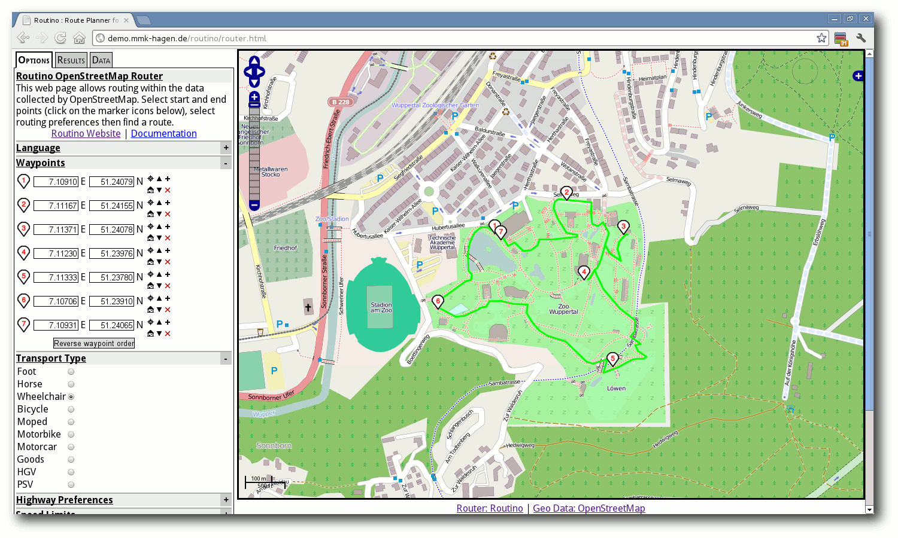Mit dem Rollstuhl durch den Wuppertaler Zoo.
Installation
Die Installation von Routino ist besonders einfach unter Debian. In der testing-Distribution ist die aktuelle Version 2.2 enthalten. Konkret findet man zwei Pakete vor: Den Router selbst (routino) und eine grafische Oberfläche (routino-www), die schlicht aber sehr funktional ist. Beides findet man auch in der Downloaddatei, die man von der Routino-Homepage [5] herunterladen kann. Eine Installationsanleitung aus den Quellen der Software findet man ebenfalls dort [6]. Im Folgenden wird jedoch von der Installation der Debian-Pakete ausgegangen. Nach der Installation (bei der möglicherweise noch weitere Pakete installiert werden, um Abhängigkeiten aufzulösen) kann die Web-Schnittstelle unter http://localhost/routino eingesehen werden. Im Unterschied zur Originalversion zeigt diese als Kartenausschnitt die gesamte Erde (und nicht nur Großbritannien) und bietet die OSM Cycle Map als alternative Kartendarstellung an. Ein Routing kann aber noch nicht stattfinden, weil noch eine geeignete Datenbank mit dem Kartenmaterial fehlt. Routino nutzt nicht die OSM-Daten direkt, sondern konvertiert die Daten zunächst in ein eigenes, optimiertes Format. Die etwa 20 GB unkomprimierte OSM-Daten für Deutschland schrumpfen somit auf etwa 800 MB, die sich über vier Dateien verteilen.Erstellung der Routino-Datenbank
Der Download, das Dekomprimieren der Daten und die Erzeugung der Routino-Datenbank für Deutschland kann durch das folgende Shell-Skript erfolgen. Auf den Seiten von Geofrabrik [7] finden sich weitere kleinere aber auch größere Bereiche der Welt.#!/bin/sh
wget http://download.geofabrik.de/osm/europe/germany.osm.bz2
[ -f germany.osm ] && rm germany.osm
mkdir -p data
[ -d data ] && rm -f data/*
pbzip2 -d germany.osm.bz2
planetsplitter --dir=data --prefix=de germany.osm
Listing: create.sh
Zum Entpacken der Daten wird pbzip2 verwendet, das mehrere Prozessoren
nutzen und somit auf Mehrprozessorsystemen deutlich schneller entpacken kann.
Die Standardvariante bzip2 kann aber ebenso verwendet werden.
planetsplitter ist ein Programm aus der Routino-Distribution,
das die eigentliche Erzeugung der Datenbank übernimmt. Während das Programm
läuft, wird ständig der aktuelle Status ausgegeben. Bei einem Aufruf als
cronjob ist es daher ratsam, den Parameter --loggable zu verwenden und
die Ausgaben in eine Datei zu schreiben. planetsplitter --help listet
alle verfügbaren Optionen auf.
Auf einem Server mit einem Intel XEON 2.4 GHz mit vier Kernen sowie 8 GB RAM
dauert die Datenbankerzeugung etwa eine Stunde.
Das Ergebnis liegt in dem Verzeichnis data und besteht aus den vier Dateien
wget http://download.geofabrik.de/osm/europe/germany.osm.bz2
[ -f germany.osm ] && rm germany.osm
mkdir -p data
[ -d data ] && rm -f data/*
pbzip2 -d germany.osm.bz2
planetsplitter --dir=data --prefix=de germany.osm
de-nodes.mem
de-relations.mem
de-segments.mem
de-ways.mem
Routino unter Debian erwartet diese vier Dateien ohne das Präfix
de- in dem Verzeichnis /var/lib/routino/data. Sie sollten also
dorthin kopiert werden (dafür sind Root-Rechte erforderlich). Damit ist bereits
alles für einen ersten Test vorbereitet, der bequem über die Web-Schnittstelle
erfolgen kann.
de-relations.mem
de-segments.mem
de-ways.mem
Der erste Test
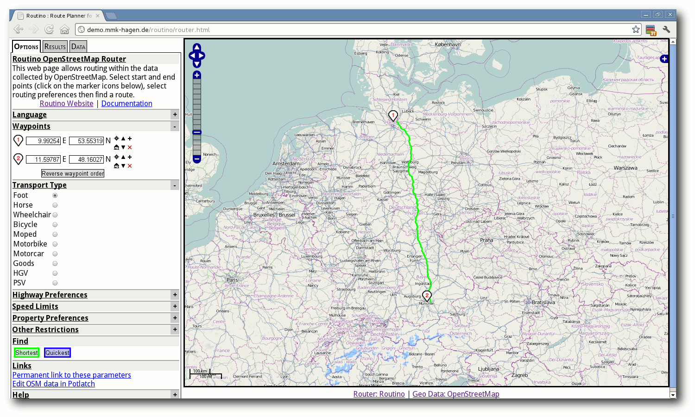Fußweg vom Jungfernstieg in Hamburg zum Englischen Garten in München.
Das Routino-Web-Frontend ist in eine linke Spalte mit dem Bedienpanel und eine rechte Spalte mit der Karte aufgeteilt. Zunächst sollte man in der Karte auf Deutschland zoomen, weil das Routing aufgrund der erstellten Datenbank nur dort funktionieren kann. In dem Bedienpanel befinden sich auf dem Reiter „Options“ alle Einstellmöglichkeiten, allen voran die Festlegung von Start- und Zielpunkt in der Rubrik „Waypoints“. Ein Klick auf das Symbol mit der „1“ befördert es in die Mitte der Karte und setzt die Startposition. Danach lässt es sich beliebig auf der Karte verschieben. Analog setzt man so den Zielpunkt für das Symbol mit der „2“. Alle weiteren Einstellungen sind für einen ersten Test irrelevant, sodass ein Klick auf einen der Knöpfe „Shortest“ oder „Quickest“ am unteren Rand des Bedienpanels das Routing startet. Das Ergebnis erscheint daraufhin als grüne oder blaue Linie in der Karte und im Bedien-Panel wird auf den Reiter „Results“ umgeschaltet. Kürzere Strecken bis zu einigen Kilometern sind in der Regel in weniger als einer Sekunde berechnet. Die Verzögerung liegt eher in der grafischen Darstellung als im eigentlichen Routing.
Anpassung der Einstellungen
Die zuvor berechnete Route war für die Fahrt mit einem Auto erstellt worden. Routino kennt jedoch zahlreiche weitere Profile, die andere Fortbewegungsmittel beschreiben. Auch eigene Profile sind möglich, erfordern aber Änderungen an den Konfigurationsdateien, die über das Web-Frontend nicht ausgeführt werden können. Dennoch bleiben viele Einstellparameter, die auf dem Reiter „Options“ in den Rubriken „Transport Type“, „Highway Preferences“, „Speed Limits“, „Property Preferences“ und „Other Restrictions“ zu finden sind. Die wichtigste Einstellung ist der Fahrzeugtyp in der Rubrik „Transport Type“. Die Datenbank wurde bereits für die möglichen Fortbewegungsmöglichkeiten erstellt und berücksichtigt Absperrungen („barriers“) oder die Erlaubnis zur Straßenbenutzung („access“). Der Fahrzeugtyp verändert auch die weiteren Einstellungen in den anderen Rubriken. Er wählt somit eine sinnvolle Voreinstellung, die jedoch danach verändert werden kann. So dürfen Fußgänger die Einbahnstraßen natürlich in beiden Richtungen begehen, Fahrräder jedoch nicht (sofern dies nicht ohnehin in den OSM-Daten erlaubt ist). Möchte man sich über diese Beschränkung hinwegsetzen, dann kann die Option „Obey oneway“ explizit abgewählt werden. Die „Highway Preferences“ und „Property Preferences“ erlauben besonders weitreichende Einstellmöglichkeiten, erfordern aber auch behutsamen Umgang. Hier geht es um eine Gewichtung der Straßentypen im allgemeinen. Das führt mitunter zu Wegführungen, die nicht sofort einleuchtend sind. Dazu ein Beispiel: Als Fußgänger steht man oft vor der Entscheidung zwischen dem etwas kürzeren Weg an der Hauptstraße entlang oder dem längeren Weg durch den Park oder Wald. Hier ein geeignetes Maß zu finden ist sehr subjektiv. Über die „Highway Preferences“ ist dies durch höhere Gewichtung der größeren oder kleineren Straßen und Wege möglich. Das führt mitunter dazu, dass selbst bei Berechnung der kürzesten Route eine längere Route gewählt wird, die dafür aber „durchs Grüne“ geht. Verdeutlicht wird dies später nochmal, wenn die Integration in Marble vorgestellt wird. Die „Speed Limits“ dürften auch ohne Erklärung einleuchten. Zwei Hinweise seien aber erlaubt. Wenn es eine Geschwindigkeitsbegrenzung in den OSM-Daten gibt („maxspeed“), dann wird diese auch berücksichtigt. Die Geschwindigkeitsbegrenzungen sind wirklich nur vom Straßentyp abhängig und nicht etwa davon, wo diese Straße verläuft. Auf einer „Primary road“ rast man dann auch schon mal mit voreingestellten 96 km/h durch eine Ortschaft. Die veranschlagte Fahrdauer ist also mit Vorsicht zu interpretieren. Hinter „Property Preferences“ verbergen sich weitere nützliche Einstellungen zur Beinflussung des Routings. „Bicycle Route“ und „Walking Route“ berücksichtigen beispielsweise die Relationen vom Typ „route“ in den OSM-Daten, um Rad- und Wanderwege zu priorisieren. Für eine Radtour kann es durchaus sinnvoll sein, den Wert für „Bicycle Route“ auf 90 % zu setzen, um sich vorwiegend auf ausgewiesenen Radwegen fortzubewegen. Eine Warnung sei abschließend noch erlaubt. Einzelne Prozentwerte bis auf 100% hochzusetzen, kann mitunter sehr unerwartete und wenig brauchbare Ergebnisse liefern. Insbesondere dann, wenn Routino gezwungen ist, Wege zu benutzen, die nicht flächendeckend erfasst sind, z.B. die besagten Rad- und Wanderwege. Da gerät die Fahrradtour schnell zur Deutschlandtour, wenn Zwischenstücke einer vermeintlich kurzen Route nicht berücksichtigt werden, weil sie nicht als Radweg ausgewiesen sind und Routino riesige Umwege daher für geeigneter hält. Der Fehler liegt selten in Routino, sondern oft in den unvollständigen OSM-Daten oder eben den extrem gewählten Einstellungen.Darstellung der Ergebnisse
Das Ergebnis einer Routenberechnung ist recht umfangreich. Da ist zunächst die Darstellung der Wegstrecke in der Karte. Die einzelnen Fahrtrichtungsänderungen sind zudem im Bedienpanel gelistet. Ein Klick auf einen Eintrag kennzeichnet die Position in der Karte und gibt eine Fahranweisung aus. Darüber hinaus werden weitere Dateien erzeugt, die sowohl für die Anzeige im Browser (HTML) als auch für eine Weiterverarbeitung geeignet sind (Text-Dateien im CSV-Format und GPX-Dateien). Der dritte Reiter „Data“ im Bedienpanel ist wirklich nur für diejenigen gedacht, die tiefer in die Eigenheiten des Routers absteigen möchten. Wenn man selbst für OSM Daten einträgt, dann ist dies aber durchaus eine sehr hilfreiche Darstellung des Datenbestands, um letztlich auch Fehler in den OSM-Daten zu finden.Zwischenhalte
Es bleibt abschließend zum Frontend nur noch zu erwähnen, dass auch bis zu sieben Zwischenhalte eingetragen werden können. Hinter dem Start- und Zielpunkt befinden sich sechs Icons. Über das Plus-Zeichen kann ein weiterer Zwischenhalt hinter dem aktuellen Zwischenhalt eingetragen werden. Die einzelnen Positionen werden daraufhin neu nummeriert. Routino selbst kann bis zu 99 Positionen berücksichtigen, das Web-Frontend begrenzt dies auf neun. Dass Zwischenhalte wieder entfernt und in der Reihenfolge verändert werden können, ist fast schon selbstverständlich.Routino auf der Kommandozeile
Das bisher Gesagte suggeriert eine Web-Applikation mit etwas angestaubter Oberfläche und auf den Wiki-Seiten von OSM findet man Routino leider in einem Vergleich unterschiedlicher „Route services with public instances“. Tatsächlich ist Routino aber ein schlankes und in klassischer Unix-Philosophie entwickeltes Kommandozeilen-Programm, das eines kann: Wege zwischen Koordinatenpunkten finden. Darin liegt die eigentliche Stärke der Software. Alle Einstellmöglichkeiten der Web-Oberfläche können über Optionen an Routino übergeben werden. Ein auf das Notwendige reduzierter Aufruf wäre der Folgende:$ routino-router --dir=/var/lib/routino/data --transport=motorcar --shortest --lon1=7.48679 --lat1=51.37733 --lon2=7.49537 --lat2=51.37761 --output-html
Die Option --output-html könnte noch entfallen, allerdings werden dann
gleich fünf Dateien, statt nur einer (shortest.html) im aktuellen
Verzeichnis abgelegt: Eben die Dateien, die auch über die Web-Oberfläche
eingesehen werden können. In Debian wird der Router im Übrigen in
routino-router umbenannt, weil der Name router zu generisch
ist. Bei der Standarddistribution ist also der Programmname router zu
verwenden.
Für deutsche Fahranweisungen bietet sich der Parameter --language=de an.
Auf dem oben beschriebenen Rechner braucht der folgende Aufruf
$ routino-router --dir=/var/lib/routino/data --transport=motorcar --shortest --lon1=10.01364 --lat1=54.02590 --lon2=10.40675 --lat2=47.67908 --language=en --output-html
etwa 3,5 Sek. Berechnet wird eine Strecke über ca. 840 km quer durch
Deutschland. Möchte man die gleiche Strecke zu Fuß bewältigen, dann sollte man
zusätzlich 22 Sek. für die Routenberechnung berücksichtigen. Bei 12.912
Minuten, die Routino für das Absolvieren der Strecke veranschlagt, eine
durchaus akzeptable Zeit. :-) Die 3.134 Gehanweisungen sollten man allerdings
besser nicht in Papierform mitnehmen.
PHP-Schnittstelle
Was manchen Anwendern wie die Steinzeit des Computer-Zeitalters vorkommt, ist für den Web-Programmierer ein Segen. Gemeint sind Kommandozeilenprogramme, die sich leicht in Web-Anwendungen nutzen lassen. Daraus ergeben sich weitreichende Anwendungsgebiete. Wer in PHP programmiert und sich nicht selbst um die passenden Optionen auf der Kommandozeile kümmern möchte, der sollte sich das PEAR-Paket Routino-Router der MMK GmbH anschauen [8]. Mit wenigen Zeilen PHP-Code lässt sich der Router starten und man bekommt ein Ergebnis-Objekt mit allen Abbiegepunkten.<?php
include('Router_Routino/Router_Routino.php');
$router = new Router_Routino();
$router->addPosition(51.359673, 7.479866);
$router->addPosition(51.377397, 7.487869);
$router->setHighwayMaxspeed('motorway', 50);
$result = $router->run();
print_r($result);
print_r($result->getTotals());
?>
Listing: routing.php
Genutzt wird diese Schnittstelle beispielsweise in einer Umkreissuche zur
Ermittlung des nächstgelegenen Restaurants zum aktuellen Standort [9]. Die Suche
selbst sortiert die gefundenen Restaurants zunächst nach der kürzesten
Luftliniendistanz. Für die ersten sechs Treffer wird jedoch die Entfernung mit
dem Auto zusätzlich ermittelt und ausgegeben. Diese Entfernung basiert auf der
von Routino ermittelten Fahrstrecke.
include('Router_Routino/Router_Routino.php');
$router = new Router_Routino();
$router->addPosition(51.359673, 7.479866);
$router->addPosition(51.377397, 7.487869);
$router->setHighwayMaxspeed('motorway', 50);
$result = $router->run();
print_r($result);
print_r($result->getTotals());
?>
Marble
Das KDE-Programm Marble [4] kann ebenfalls Gebrauch von Routino machen. Unter Debian ist nichts weiter notwendig als die Installation des Programms. In der ebenfalls zweigeteilten Darstellung in Marble gibt es im linken Bereich einen Reiter „Routing“. Sofern Routino von Marble erkannt wurde, findet man unten auf dem Reiter ein Auswahlmenü der möglichen Router, z.B. auch OpenRouteService [10]. 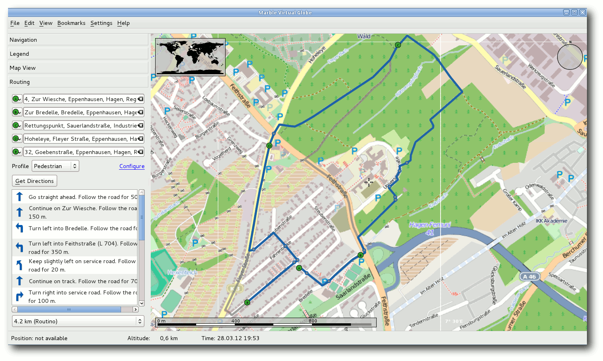Routing mit Routino in Marble.
Nach der Aktivierung sind zwei Routen durch die vorgegebenen Punkte ersichtlich. Die blaue Route wurde durch Routino berechnet. Die graue Route stammt von OpenRouteService. Was bereits oben erwähnt wurde, zeigt sich hier ganz deutlich: Der Weg von Punkt B zu Punkt C verläuft bei Routino durch den Wald und ist damit sicher länger als der vorgeschlagene Weg von OpenRouteService über die Hauptstraße vom Typ „secondary“. Auch auf dem Weg von Punkt D zu Punkt E verlässt Routino die Straße vom Typ „tertiary“ sobald als möglich und wählt den Zickzack-Kurs durch das Wohngebiet. Auch hier wird der offensichtlich längere Weg gewählt. Die Abneigung Routinos für größere Straßen bei der Fußgängernavigation liegt in den reduzierten Prozentwerten für Straßen dieses Typs (einsehbar in den „Highway Preferences“ der Web-Oberfläche). Marble erlaubt hier keine Änderung der voreingestellten Werte. Sie müssten direkt in den Konfigurationsdateien von Routino erfolgen (/usr/share/routino/profiles.xml) oder besser durch Angabe einer eigenen Profildatei beim Aufruf des Routers (Option --profiles).
Zu guter Letzt
Routen in guter Qualität berechnen kann Routino. Nicht minder interessant ist aber auch die Nutzung als Testwerkzeug für die eigenen Beiträge zu OSM. Die Berechnung bekannter Wegführungen durch Routino offenbart oft Überraschungen, die bei näherer Betrachtung auf unzureichendes Mapping zurückzuführen sind. Schranken („barrier“), denen die Passierbarkeit durch Fußgänger fehlt, Einbahnstraßen, die von Fahrradfahrern beidseitig befahren werden dürfen, die Routino aber umständlich umfährt, weil dies nicht aus den OSM-Daten hervorgeht, fehlerhafte Abbiegevorschriften oder sogar fehlende Verbindungen zwischen Wegen fallen schnell auf. Eine zweite Anwendung ist das gezielte Erstellen von gpx-Dateien und das Ausmessen von Strecken. Gelegentlich benötigt man im Vorfeld eine gpx-Datei einer anstehenden Wanderung oder Fahrradtour. Eventuell möchte man auch nur wissen, auf welche Streckenlänge man sich einlässt. Mit genügend Zwischenhalten schickt man Routino genau auf den geplanten Weg und erhält die Länge der Strecke, sowie deren gpx-Datei zum Download.Ein paar Eigenheiten
Das Routino Web-Frontend erlaubt ein Zoom bis zur Stufe 16. In der höchsten Stufe fällt auf, dass berechnete Routen nicht immer genau auf Wegen liegen. Bei sehr nahe aneinander liegenden Wegen kann es auch schwierig werden, den genauen Weg zu ermitteln. Der Grund liegt in einer Optimierung der Datenbank, die seit Version 2.2 greift. Knoten auf Wegen, die weniger als 5 Meter von der geradlinigen Verbindung abweichen, werden nicht mehr berücksichtigt. Dies reduziert die Datenbankgröße um etwa ein Drittel und verkürzt die Zeit für das Routing geringfügig. Der Preis sind etwas ungenauere Wegführungen, die für die Navigation aber unerheblich sind. Die ermittelten Wegzeiten waren schon Thema. Man könnte auch behaupten, die vorhergesagten Zeiten sind innerstädtisch hoffnungslos optimistisch. Das liegt nicht nur an den Höchstgeschwindigkeiten, die aus dem Straßentyp ermittelt werden, sondern auch daran, dass andere Faktoren, beispielsweise Ampeln, keine Berücksichtigung finden. Das aktuelle Verkehrsaufkommen wird ohnehin nicht berücksichtigt, aber das ist bei einem Offline-Router auch nicht oberste Priorität.Fazit
Routino ist schnell, hat viele Einstellmöglichkeiten und lässt sich in vielen Anwendungsszenarien einbinden. Die Qualität der gefundenen Routen hängt hauptsächlich von der Qualität der OSM-Daten und passenden Einstellungen für das Routing ab. Letztlich macht es aber vor allem viel Spaß, mit Routino zu „spielen“ und die eigene Umgebung zu erkunden. Links[1] http://www.freiesmagazin.de/freiesMagazin-2012-03
[2] http://wiki.openstreetmap.org/wiki/Routing
[3] http://www.routino.org
[4] http://edu.kde.org/marble/
[5] http://www.routino.org/download/
[6] http://www.routino.org/documentation/installation.html
[7] http://www.geofabrik.de/
[8] http://www.mmk-hagen.de/produkte-services/download.html
[9] http://www.gastlicheswestfalen.de/nc/umkreissuche.html
[10] http://www.openrouteservice.org/
| Autoreninformation |
| Uwe Steinmann ist Debian-Entwickler und Geschäftsführer der MMK GmbH in Hagen. Er ist Maintainer des Debian-Pakets und entwickelt Web-Anwendungen, die auch Routino nutzen. |
Diesen Artikel kommentieren
Zum Index
Trine 2
von Dominik Wagenführ Genau ein Jahr, nachdem das Erfolgsspiel Trine (siehe freiesMagazin 07/2011 [1]) im Humble Frozenbyte Bundle erschienen ist [2], hat der finnische Spieleentwickler Frozenbyte [3] den zweiten Teil für Linux im April 2012 vorgestellt. Der Artikel wirft einen Blick auf Trine 2 [4] und vergleicht ihn mit seinem Vorgänger. Hinweis: Wir danken Frozenbyte für die Bereitstellung eines Rezensionsexemplares von Trine 2.Der Startbildschirm von Trine 2.
Mit von der Partie
Der Artikel könnte sicherlich etwas kürzer ausfallen, wenn man einfach schreibt, dass Trine 2 wie Trine ist, nur etwas aufpolierter. Damit wären aber wohl der Autor, der Spielehersteller und auch die Lesergemeinde etwas enttäuscht, daher folgt eine etwas genauere Darstellung der Unterschiede der beiden Spiele. Wie schon beim ersten Teil sind der Zauberer Amadeus, der Krieger Pontius und die Diebin Zoya mit von der Partie. Alle drei werden am Anfang des Spiels vom Trine zusammengeführt, da eine dunkle Macht das Königreich bedroht und nur die drei Helden etwas dagegen ausrichten können. Die Einführung der Charaktere wird sehr gut in ein kleines Tutorial eingebettet. Wer Trine kennt, freut sich, die drei Gestalten wieder zu sehen und findet sich auch sofort wieder in die intuitive Steuerung ein. Wer Trine noch nie gespielt hat, hat innerhalb weniger Sekunden erlernt, wie die Figuren mit ihrer Umwelt agieren können. Über ihre Hintergründe wird aber wenig erzählt. 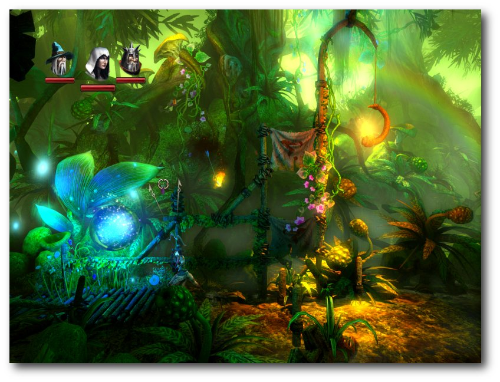Im Wald fängt wieder alles an.
Nach wie vor haben die drei Helden unterschiedliche Fähigkeiten, die sie in der Regel gemeinsam einsetzen müssen, um das Spiel meistern zu können. So kann Amadeus Kisten und Leitern herbeizaubern und diese schweben lassen. Pontius versteht es, mit seinem Schild zu blocken und sein Hammerangriff teilt ordentlich Schaden aus. Zoya schließlich beherrscht den Fernkampf mit Pfeil und Bogen und kann athletisch elegant an ihrem Enterhaken durch die Gegend schwingen. Neu ist, dass der Zauberer Amadeus nun auch Gegner schweben lassen und durch die Gegend bewegen kann. Ein Kritikpunkt, den die Entwickler aus Teil 1 mitgenommen haben. Leider ist die fliegenden Plattform, auf der Amadeus höher gelegene Areale erreichen konnte, verschwunden. Pontius kann mit seinem Hammer nun nicht nur zuschlagen, sondern diesen auch weitwurfmäßig in Gegnerhorden schleudern. Dafür kann er keine Steine und Kisten mehr aufheben und werfen. Daneben ist das Flammenschwert aus Teil 1 einem Frostschild gewichen. Für die Diebin Zoya hat sich wenig verändert. Die Feuerpfeile wurden nur durch Frostpfeile ergänzt, ansonsten bleibt alles beim Alten. 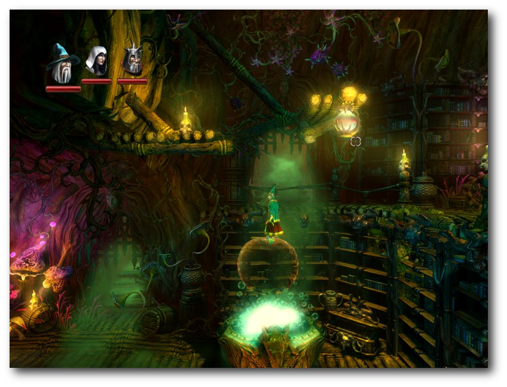
Luftblasen ersetzen die schwebende Plattform aus Trine 1.
Spielart wie zuvor
Spielerisch unterscheidet sich Trine 2 gar nicht vom Vorgänger. Nach wie vor muss man einen Weg vom Anfang eines Levels bis zum Ende finden. Dabei nutzt man Blätter und Pilze zum Hüpfen, schwingt sich mit dem Enterhaken über Abgründe und giftige Wolken, legt Hebel um, um diverse Maschinerien in Gang zu setzen und versucht sich dabei auch noch gegen den einen oder anderen Gegner zur Wehr zu setzen. Sterben kann man in Trine 2 ebenfalls nicht. Erleidet ein Charakter zu viel Schaden oder stürzt er in einen Abgrund, verschwindet er zwar, man kann aber von einer nahe gelegenen Stelle mit einem der anderen beiden Charaktere weitermachen. Startet man gar von einem der zahlreichen Checkpoints, wird man komplett wiederbelebt und kann das Spiel auch mit dem gerade dahingeschiedenen Charakter fortsetzen.
Amadeus kann Dinge schweben lassen.
Die Gesundheitsphiolen aus Trine 1 sind damit komplett verschwunden, was aber kein Problem darstellt, da die Checkpoints wirklich sehr fair im Spiel verteilt sind. Von Vorteil ist, dass man sich selbst in einem Kampf nur über einen Checkpoint bewegen muss und die Gesundheit komplett wieder aufgefüllt wird. Besiegte Gegner hinterlassen dennoch ab und zu Herzen, die die Gesundheit wieder auffüllen. Ebenfalls verschwunden ist der Energiebalken aus dem ersten Teil. Egal wie viel man zaubert oder welche Waffen man einsetzt, es gibt keine Begrenzung mehr. Dies macht das Spiel ein kleines bisschen einfacher, ändert aber nicht viel am eigentlichen Spielverhalten. 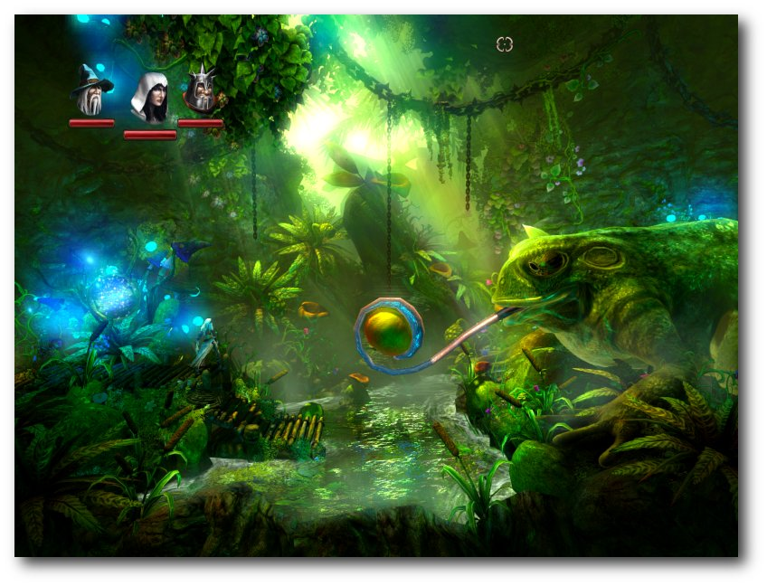
Ob der Frosch nicht nur Äpfel frisst?
Einzig die Erfahrungsphiolen sind geblieben. Diese liegen zum einen im Level verstreut, werden zum anderen aber auch von besiegten Gegnern hinterlassen. Hat man genügend Erfahrung gesammelt, steigt man ein Erfahrungslevel auf und erhält einen Erfahrungspunkt. Diese Punkte kann man dann für Spezialeigenschaften der drei Helden einsetzen. Amadeus kann mehr Kisten herbeizaubern, Zoya kann mehr Pfeile schießen und Pontius darf seinen Hammer werfen. Ein Gimmick ist ebenfalls in der Grundart zum Vorgänger gleich geblieben: In jedem der dreizehn Levels sind zwei Truhen versteckt. Diese befinden sich meist an entlegenen Orten, die man nicht ohne Weiteres erreicht. Der Inhalt der Truhen unterscheidet sich aber sehr stark vom ersten Teil – und dies ist auch einer der wenigen Kritikpunkte. Lagen in Trine 1 noch hilfreiche Gegenstände in den Kisten, findet man jetzt „nur“ noch Konzeptzeichnungen und Gedichte darin. Diese haben keinerlei spielerischen Mehrwert, sondern sollen nur das Auge und ggf. auch das Ohr erfreuen. 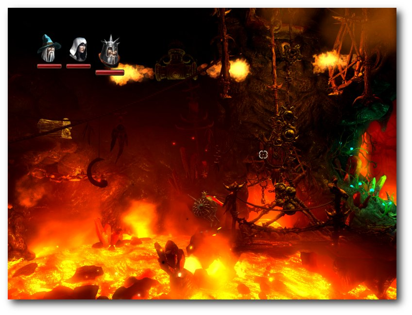
Selbst im Höllenfeuer gibt es versteckte Truhen.
Der Märchenonkel erzählt
Sehr schön anzuhören sind wieder einmal die Sprecher des Spiels. Auch wenn die Dialoge nicht übermäßig vorkommen, leitet eine nette Erzählerstimme jedes Level ein und am Anfang unterhalten sich auch die drei Charaktere ab und an. Interessant dabei ist, dass die deutsche Synchronisation wesentlich besser ist als die englische Sprachausgabe. Irgendwie passen die englischen Stimmen nicht so recht zu den Charakteren, wie ich sie mir vorstelle, wobei dies aber sicherlich Geschmackssache ist. Immerhin kann man beim Spielstart wählen, in welcher Sprache Trine 2 erscheinen soll. 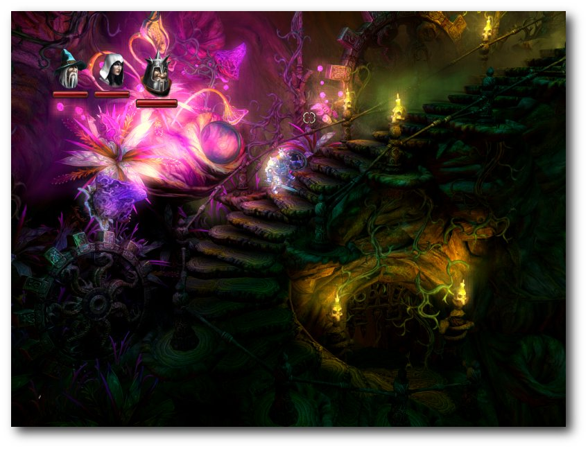Das Baumhaus der Hexe.
Die Geschichte von Trine 2 ist gar nicht so schlecht, auch wenn man nach der Hälfte des Spiels bereits dahinter kommt, was das Geheimnis des Spiels ist. Grob zusammengefasst ruft der Trine die drei Helden zusammen, weil fleischfressende Pflanzen und Goblins das Königreich bedrohen. Auf der Suche nach der Quelle des Übels stößt man alsbald auf zwei Prinzessinen, die dann auch den Kern der Geschichte ausmachen. Wie gesagt, sehr tiefgehend ist die Geschichte nicht, aber Trine ist auch kein Rollenspiel, sondern vorrangig ein physikbasiertes Geschicklichkeitsspiel. 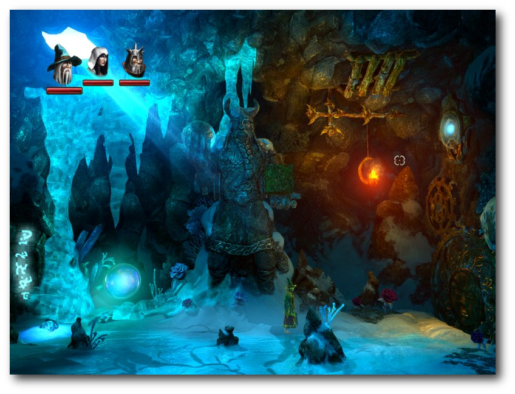
Riesige Höhlen im Schnee warten mit Rätseln auf.
Da wo die Story hinkt, reißt es die Grafik wieder heraus. Wie schon bei Trine 1 spielen die Entwickler von Frozenbyte mit Farben und Licht. Dabei ist es egal, ob man sich durch düstere Gewölbe bewegt, die farbenfrohen Pflanzen im Wald betrachtet, das Baumhaus einer Hexe erkundet oder unter Wasser eine Runde fischen geht – jedes Level wird extrem stimmungsvoll in Szene gesetzt und die Licht- und Schattenspiele beeindrucken sehr. Im Gegensatz zum ersten Teil wird durch Kameraschwenks und -einstellungen der Pseudo-3-D-Effekt noch etwas verstärkt. Nach wie vor ist Trine 2 ein 2-D-Spiel, sodass kein Charakter in die Tiefe laufen kann. Dennoch wird dieser Eindruck vermittelt, man läuft z.B. auf einem breiten Weg oder überquert einen Fluss, der irgendwo in der Ferne beginnt. 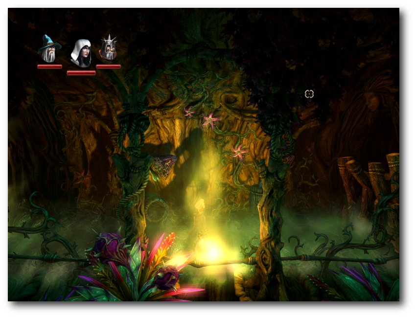
Sehr schönes Spiel mit Licht und Schatten.
Die Grafik hat etwas ihren Preis, da bei höchster Auflösung (1920x1200), höchsten Grafikeinstellungen und Extreme Anti-Aliasing auch eine Grafikkarte der neueren Generation (NVIDIA Geforce 460GTS) ordentlich zu arbeiten hat, um alles ruckelfrei darstellen zu können. Mit moderateren Einstellungen läuft das Spiel aber sicherlich auch unter älteren Grafikkarten, sieht dann aber natürlich nicht so schön aus. Eine 3-D-Beschleunigung ist aber wahrscheinlich Pflicht. Stimmungsvoll untermalt wird das Spielgeschehen noch durch den großartigen Soundtrack von Ari Pulkkinen, der bereits im ersten Teil für die musikalische Unterstützung sorgte. Jedes Level hat eine eigene Melodie und auch in den Kämpfen passt sich die Musik an. Dabei handelt sich um wirklich abwechslungsreiche Sounds, die niemals langweilen oder gar stören. 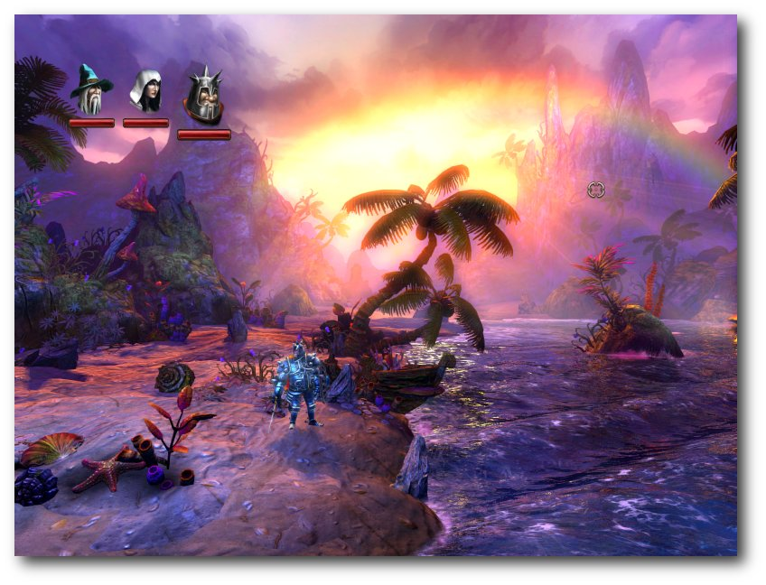
Strand, Wellen, Sonnenaufgang und Regenbogen. Was will man mehr?
Immer noch Einheitsgegner
Ein Manko des ersten Trines waren die doch recht generischen und immer wieder gleichen auftauchenden Gegner. Trine 2 hat sich in der Hinsicht ein stark verbessert. Die Rolle der Skelette aus Teil 1 werden nun von Goblins übernommen, die bei jedem Kampf gleich mehrfach über die Gruppe herfallen. Dabei gibt es verschiedene Exemplare, vom Speerträger über den Bogenschützen und den Flammerspucker bis hin zum mehrarmigen Derwisch. 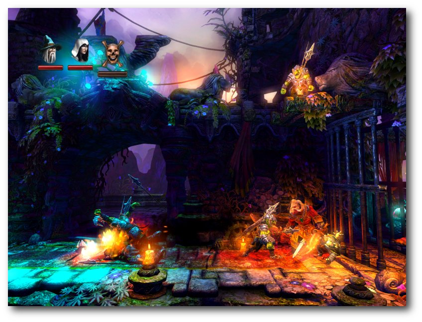Im Hinterhalt warten zahlreiche Gegner.
Für etwas mehr Abwechslung sorgen andere Gegner wie fleischfressende Pflanzen, Echsen, riesige Spinnen oder Trolle, deren Kampfstrategie aber immer die gleiche ist und bei denen man sich nicht so groß anstrengen muss, um sie zu besiegen. Etwas spannender sind da schon die Kämpfe gegen die Zwischen- oder Endgegner, die in Form riesiger Schlangen, Monsterkraken oder Drachen daherkommen. 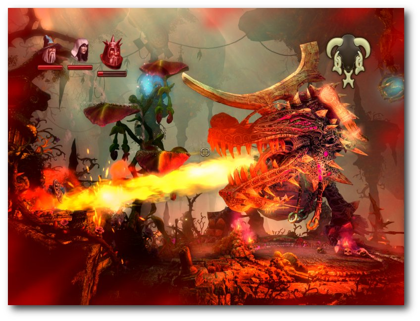
Auch mit Drachen bekommt man es zu tun.
Fazit
Insgesamt ist Trine 2 ein sehr guter Nachfolger von Trine und vor allem wieder ein sehr gutes natives Linux-Spiel. Andere Entwicklerstudios, die die Linux-Kompatibilität durch geschlossene Systeme wie Adobe Air (welches unter Linux nicht einmal mehr weiterentwickelt wird) sicherstellen wollen, können sich daran ein Beispiel nehmen. Der Wiederspielwert ist bei Trine 2 auch gegeben. Vor allem die Trophäen, die man im Spiel erreichen kann, geben einen Anreiz, das Spiel oder einzelne Passagen noch einmal zu spielen. So erhält man Trophäen, wenn man viele Objekte stapelt und sich auf die Spitze des Objektberges stellt, wenn man ein paar Sekunden auf einer Planke im Wind surft, mit der Diebin am Enterhaken Saltos schlägt und vieles mehr. 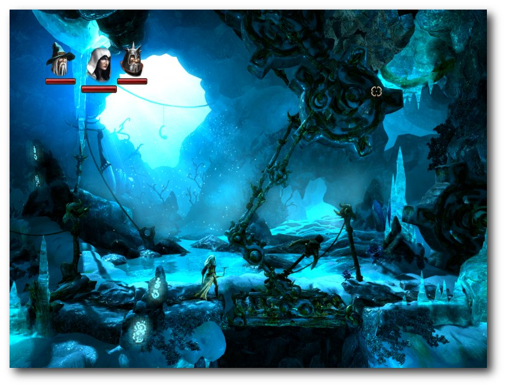Eisige Landschaften.
Die Version von Trine 2, die dem Test zugrunde lag, war immer noch als Beta tituliert, lief aber fast fehlerfrei. Es gab weder Sound- noch Grafikprobleme. Nur an einer Stelle verabschiedete sich das Spiel komplett und stürzte ab. Durch die automatische Speicherfunktion in jedem Level war das aber nicht ganz so tragisch. Wer sich vorab über eventuelle Probleme informieren will, findet im Frozenbyte-Forum eine gute Anlaufstelle [5]. Zu kaufen gibt es Trine 2 in zwei Versionen. Die Standard Edition für 14,99 US-Dollar (ca. 12 Euro) liefert das Spiel ganz normal zum Download über den Humble Store, den manch einer von den Humble Bundles schon kennt. Die Collector's Edition für 24,99 US-Dollar (ca. 20 Euro) enthält neben dem Spiel auch noch ein digitiales Artbook mit zahlreichen Konzeptzeichnungen (die man zum Teil auch in den Truhen im Spiel findet) und den sehr guten Soundtrack von Ari Pulkkinen, den man sich auch nach dem Spiel noch ohne Probleme anhören kann. Die Bezahlung geschieht über PayPal, Amazon Payments oder Google Checkout. 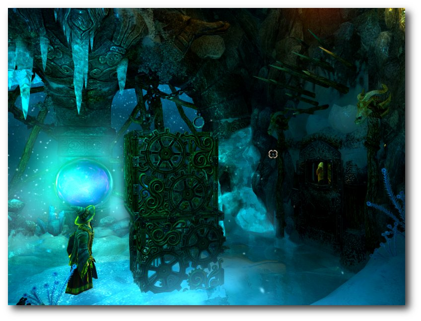
Eingesperrt im Kerker. Nur wie kommt man raus?
Wer sich immer noch nicht sicher ist, ob das Spiel etwas für den eigenen Geschmack ist, kann sich bei YouTube einen kurzen Trailer anschauen, der zeigt, wie sich Trine 2 spielt [6]. Im Video wird auch der Online-Multiplayer-Modus gezeigt, der für das Review nicht getestet wurde. Für die Zukunft ist auch ein Expansion Pack geplant, welches sechs weitere Levels beinhaltet, neue Gegner mitbringt und so für einige Stunden Spielspaß sorgen soll. Wann es soweit ist, ist noch nicht ganz klar, ebenso wenig wie der Preis, aber es existieren bereits ein paar Videos dazu [7] [8] [9]. 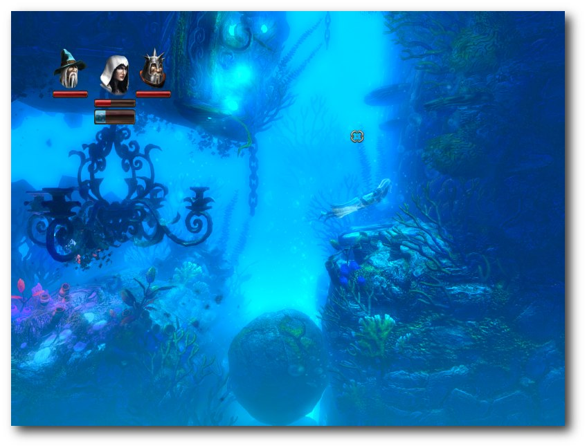
Auch unter Wasser weiß Trine 2 zu begeistern.
Links
[1] http://www.freiesmagazin.de/freiesMagazin-2011-07
[2] http://www.deesaster.org/blog/index.php?/archives/1647
[3] http://frozenbyte.com/
[4] http://www.trine2.com/
[5] http://frozenbyte.com/board/viewforum.php?f=22
[6] http://www.youtube.com/watch?v=cRe7sYWrNNo
[7] http://www.youtube.com/watch?v=baqLZkjR-6w
[8] http://www.youtube.com/watch?v=rD_b-j7u7q4
[9] http://www.youtube.com/watch?v=pZyoVMHfSVc
| Autoreninformation |
| Dominik Wagenführ (Webseite) spielt sehr gerne, wenn es seine Freizeit zulässt. |
Diesen Artikel kommentieren
Zum Index
Rezension: LPIC-1 – Sicher zur erfolgreichen Linux-Zertifizierung
von Michael Niedermair Das Prüfungsvorbereitungsbuch für die LPIC-1 ist jetzt neu in der dritten Auflage erschienen und deckt die aktuellen Lernziele 3.5 (Stand 2012) des Linux Professional Institute (LPI) ab. Redaktioneller Hinweis: Wir danken dem Verlag Galileo Computing für die Bereitstellung eines Rezensionsexemplars. Das Buch hat sich zum Ziel gesetzt, den Leser auf die Prüfungen 101 und 102 vorzubereiten, die notwendig sind, um das LPIC1-Zertifikat (Junior Level Linux Certification) zu erhalten. Der Autor Harald Maaßen ist langjähriger Dozent und Berater im Linux-Umfeld und leitet Zertifizierungsprüfungen für das LPI.Was steht drin?
Das Buch ist in zwei große Bereiche gegliedert, einmal für die erste Prüfung 101 und einmal für die zweite Prüfung 102. Jeder dieser Bereiche ist in die LPI-Topics unterteilt, für die Prüfung 101 die Topics 101 (Systemarchitektur), 102 (Linux-Installation und Paketverwaltung), 103 (GNU- und Unix-Kommandos), 104 (Geräte, Linux-Dateisysteme, Filesystem Hierarchy Standard) und ein Bereich mit 120 Übungsfragen (mit Lösungen). Der zweite Bereich hat die Topics 105 (Shells, Skripte und Datenverwaltung), 106 (Oberflächen und Desktops), 107 (Administrative Aufgaben), 108 (Grundlegende Systemdienste), 109 (Netz-Grundlagen), 110 (Sicherheit) und ein Bereich mit 112 Übungsfragen (mit Lösungen). Abgeschlossen wird es mit dem Index, der elf Seiten umfasst, und anschließend fünf Seiten mit Werbung.Wie liest es sich?
Die zwei Bereiche des Buches sind genau so aufgeteilt, dass diese die Inhalte der jeweiligen LPI-Prüfung abdecken. Jeder Teilbereich wird eingeleitet mit der Beschreibung des entsprechenden Inhalts gemäß der Prüfungsinhalte und was der Leser hier lernen wird. Danach erfolgt die theoretische Erläuterung, die mit Beispielen, Kommandoaufrufen und Ausgaben durchmischt ist. Die einzelnen Bereiche lassen sich gut lesen und werden optisch durch ein „Daumenkino“ unterstützt. Die Länge ist dabei gut ausgewogen zwischen Vermittlung des Lernstoffes und Bereitschaft, den Lernstoff an einem Stück durch zu arbeiten. Zwischendurch sind immer wieder „Prüfungstipps“ eingestreut. Die Fragen, die jeden Bereich abschließen, sind vom Aufbau (nur eine Antwort ist richtig, mehrere Antworten sind richtig und freie Antwort) genau wie die eigentliche Prüfung und testen den Lernstoff komplett ab. Danach folgt die Lösung, wobei jede Antwort ausführlich erläutert wird.Kritik
Das Buch soll den Leser optimal auf die LPIC1-Zertifizierung vorbereiten und ist dafür sehr gut geeignet. Der theoretische Inhalt wird gut und praxisnah vermittelt und deckt die aktuellen Prüfungsinhalte ab. Man merkt deutlich, dass der Autor sehr viel Erfahrung hat und sich mit dem Thema sehr gut auskennt. Die Übungsfragen sind sehr gut gestellt und decken das Lernfeld entsprechend ab. Sehr gut ist auch die Darstellung der Lösung der Fragen. Hier wird nicht nur die richtige Antwort gegeben, sondern sehr gut erläutert, warum die anderen Antworten falsch sind. Für die einzelnen Topic-Bereiche hätte ich mir aber ein paar Verständnisfragen am Ende gewünscht, so dass der Leser nach jedem Topic-Bereich selbst überprüfen kann, ob er den Lernstoff verstanden hat. Der Index ist ausreichend und meist findet man die entsprechende Stelle sehr schnell. Bei manchen Einträgen wäre jedoch eine „fette“ Markierung des Haupteintrages wünschenswert. Das Buch erscheint als Softcover-Version mit DVD und Daumenkino für die einzelnen Bereiche. Das Preis-Leistungs-Verhältnis ist gut. Die DVD enthält das Openbook Linux-Handbuch und einen Prüfungssimulator, der einem zusätzlich hilft, den gelernten Stoff zu testen. Das Buch gefällt mit sehr gut und ich werde es meinen Schülerinnen und Schülern empfehlen. Wünschenswert wäre es, dass demnächst das Buch als Openbook erscheint.| Buchinformationen | |
| Titel | LPIC-1 – Sicher zur erfolgreichen Linux-Zertifizierung |
| Autor | Harald Maaßen |
| Verlag | Galileo Computing |
| Umfang | 545+5 Seiten |
| ISBN | 978-3-8362-1780-4 |
| Preis | 34,90 Euro |
Links
[1] http://www.galileocomputing.de/katalog/buecher/titel/gp/titelID-2653
[2] http://www.lpice.eu/de/lpi-zertifizierungsinhalte.html
[3] http://www.lpice.eu/de/lpi-zertifizierungsinhalte/pruefung-101-lernziele.html
[4] http://www.lpice.eu/de/lpi-zertifizierungsinhalte/pruefung-102-lernziele.html
| Autoreninformation |
| Michael Niedermair ist Lehrer an der Münchener IT-Schule und unterrichtet seit 2005 Linux. Die Schule hat seither mehrere hundert Schüler erfolgreich zur LPIC1-Zertifizierung geführt. |
Diesen Artikel kommentieren
Zum Index
Leserbriefe
Für Leserbriefe steht unsere E-MailadresseLeserbriefe und Anmerkungen
Python-Zusammenfassung
-> Ich wollte mal anfragen, ob es möglich sei, dass Sie eine erneute Zusammenfassung der Python-Kapitel durchführen und veröffentlichen. Ich selber war sehr glücklich über die letzte Zusammenfassung, da sie einem das Zusammenkratzen der Informationen aus den vorigen Magazinen erspart.Dominic K. <- Ja, es wird wieder so eine Zusammenfassung geben, der Autor Daniel Nögel wollte damit aber noch warten, bis er einen klaren Schnitt ziehen kann. Wann dies der Fall ist, ist nicht klar, es sollte aber nicht mehr allzu lange bis zur nächsten Python-Sonderausgabe dauern.
Dominik Wagenführ
Objektorientierte Programmierung
-> Leider lese ich viel zu wenig in freiesMagazin. Die Artikelserie zur OOP hat mich dazu gebracht, wieder reinzuschauen. Tendenziell wird mMn vielleicht etwas zu wenig auf die Nachteile von Singletons [1] eingegangen, aber das ist Ansichtssache. Jedenfalls finde ich die Artikelserie gut und habe sie auch meinen Studenten empfohlen als ich zu nem ähnlichen Thema [2] eine Saalübung gehalten habe. Vielen Dank also dafür und weiter so!Christian (Kommentar) <- In der Tat bin ich auch kein so großer Freund von Singletons, aber von prozeduralen Code aus kommend hin zu etwas OOP ist es ein guter Zwischenschritt. Auf die Probleme der Nebenläufigkeit habe ich ja hingewiesen und es gibt natürlich noch viele weitere. Ich setze das Pattern daher auch eher selten ein. (In einer Überarbeitung des Codes hätte ich das Singleton wohl wieder entfernt und dann lieber ein Interface unter meine Factory gesetzt.) Also Danke noch einmal und ich hoffe, der letzte Teil wird ebenso interessant.
Dominik Wagenführ Links
[1] http://www.christian-rehn.de/tag/singleton/
[2] http://www.christian-rehn.de/2012/05/12/wie-man-software-entwirft/
Die Redaktion behält sich vor, Leserbriefe gegebenenfalls zu kürzen. Redaktionelle Ergänzungen finden sich in eckigen Klammern. Die Leserbriefe kommentieren
Zum Index
Veranstaltungskalender
| Messen | ||||
| Veranstaltung | Ort | Datum | Eintritt | Link |
| GPN12 | Karlsruhe | 07.06.–10.06.2012 | frei | https://entropia.de/GPN12/ |
| Hackathon | Karlsruhe | 16.06.–17.06.2012 | frei | http://www.nerd-zone.com/hackathon/ |
| 13. Libre Software Meeting | Genf | 07.07.–12.07.2012 | frei | http://2012.rmll.info/ |
| Linuxbierwanderung | Diksmuide | 12.08.–19.08.2012 | frei | http://lbw2012.tuxera.be/ |
| YAPC::Europe | Frankfurt am Main | 20.08.–22.08.2012 | – | http://act.yapc.eu/ye2012/ |
| FrOSCon | Sankt Augustin | 25.08.–26.08.2012 | – | http://www.froscon.de/ |
Vorschau
freiesMagazin erscheint immer am ersten Sonntag eines Monats. Die Juli-Ausgabe wird voraussichtlich am 1. Juli unter anderem mit folgenden Themen veröffentlicht:- Perl-Tutorial 7
Konventionen
An einigen Stellen benutzen wir Sonderzeichen mit einer bestimmten Bedeutung. Diese sind hier zusammengefasst:| $: | Shell-Prompt |
| #: | Prompt einer Root-Shell – Ubuntu-Nutzer können hier auch einfach in einer normalen Shell ein sudo vor die Befehle setzen. |
| ~: | Abkürzung für das eigene Benutzerverzeichnis /home/BENUTZERNAME |
Impressum ISSN 1867-7991
freiesMagazin erscheint als PDF, EPUB und HTML einmal monatlich.Erscheinungsdatum: 3. Juni 2012
| Kontakt | |
| Postanschrift | freiesMagazin |
| c/o Dominik Wagenführ | |
| Beethovenstr. 9/1 | |
| 71277 Rutesheim | |
| Webpräsenz | http://www.freiesmagazin.de/ |
| Autoren dieser Ausgabe | |
| Hans-Joachim Baader | Ubuntu und Kubuntu 12.04 LTS |
| Hauke Goos-Habermann | Cloud-Backup mit Bordmitteln |
| Mathias Menzer | Der Mai im Kernelrückblick |
| Michael Niedermair | Rezension: LPIC-1 – Sicher zur erfolgreichen Linux-Zertifizierung |
| Uwe Steinmann | Routino |
| Dominik Wagenführ | Objektorientierte Programmierung: Teil 4 – Strategie, wechsel Dich!, Trine 2 |
| Redaktion | |
| Dominik Honnef | Matthias Sitte |
| Dominik Wagenführ (Verantwortlicher Redakteur) | |
| Satz und Layout | |
| Andreas Breitbach | Holger Dinkel |
| Dominik Frey | Tobias Kempfer |
| Nico Maikowski | Ralph Pavenstädt |
| Stefan Wiehler | |
| Korrektur | |
| Daniel Braun | Frank Brungräber |
| Vicki Ebeling | Stefan Fangmeier |
| Mathias Menzer | Christian Schnell |
| Karsten Schuldt | Toni Zimmer |
| Veranstaltungen | |
| Ronny Fischer | |
| Logo-Design | |
| Arne Weinberg (CC-BY-SA 3.0 Unported) |
Soweit nicht anders angegeben, stehen alle Artikel, Beiträge und Bilder in freiesMagazin unter der Creative-Commons-Lizenz CC-BY-SA 3.0 Unported. Das Copyright liegt beim jeweiligen Autor. freiesMagazin unterliegt als Gesamtwerk ebenso der Creative-Commons-Lizenz CC-BY-SA 3.0 Unported mit Ausnahme der Inhalte, die unter einer anderen Lizenz hierin veröffentlicht werden. Das Copyright liegt bei Dominik Wagenführ. Es wird erlaubt, das Werk/die Werke unter den Bestimmungen der Creative-Commons-Lizenz zu kopieren, zu verteilen und/oder zu modifizieren. Die xkcd-Comics stehen separat unter der Creative-Commons-Lizenz CC-BY-NC 2.5 Generic. Das Copyright liegt bei Randall Munroe.
File translated from TEX by TTH, version 3.89.
On 2 Jun 2012, 23:25.